Section 3 RGB Classification
We’ll use the RGB imagery alone to explore unsupervised and supervised classification algorithms.
Ultimately, it is likely we will use an object-based image analysis (OBIA) approach. OBIA is a technique (or a set of techniques) used to analyze digital images that was developed relatively recently in comparison to ‘classic’ pixel-based image approaches (Burnett and Blaschke 2003). The OBIA approach for ecological applications is described by Goncalves et al. (2019) who also introduce the SegOptim package
In future sections we will explore, integration of spectral data with the 3D point cloud data (i.e. “data fusion”) to test distinguishing the woody material in slash piles from surrounding vegetation or soil. Field-measured slash piles will be used as the ground truth data to perform a confusion matrix-based validation accuracy assessment of the methods.
Norton et al. (2022) combined LiDAR and hyperspectral data in a data fusion approach for classification of semi-arid woody cover species and achieved accuracies ranging from 86% to 98% for five woody species
We’ll see how far we can get without hyperspectral data since this data is less common
3.1 Textural covariates
Haralick et al. (2007) describe how quantitative measures of image texture can help distinguish between different imagery patterns that might have similar spectral signatures but distinct textures (e.g. vegetation types, habitat structures, or disturbance patterns). These textural features are typically calculated on a single-band grayscale image (i.e. panchromatic) but can also be calculated from spectral indicies (e.g. NDVI). Common Haralick statistics include: mean (average pixel value within the window), variance (variation in pixel values), homogeneity, contrast, and entropy (the randomness or disorder of the image)
Rodman et al. (2019) also describe a method using a series of image processing steps to add supplemental information describing the texture and context surrounding each image pixel in their analysis of forest cover change based only on panchromatic imagery (i.e. “black and white”). These textural covariates may be helpful for identifying slash piles, especially if we only have RGB data.
first, we’ll make a single panchromatic band (the mean of red, green, and blue values) from our RGB imagery
rgb_to_pan_fn <- function(r, g, b) {
pan <- (r + g + b)/3
# replace all 0's with na
pan <- terra::subst(pan, from = 0, to = NA)
return(pan)
}
panchromatic_rast <- rgb_to_pan_fn(
ortho_rast[[1]], ortho_rast[[2]], ortho_rast[[3]]
)quick plot

nice, now we’ll make the textural covariates described by Rodman et al. (2019) in Appendix S2
rast_rodmanetal2019_fn <- function(
rast, windows_m = c(3,5,7,9,11,13,15), scale_to_1m = T
, rast_nm = "panchromatic"
) {
rast <- rast[[1]]
# scale the windows based on resolution
if(scale_to_1m){
windows_m <- round_to_nearest_odd(
(1/terra::res(rast)[1])*windows_m
)
}else{
windows_m <- round_to_nearest_odd(windows_m)
}
################################
# means
################################
r_means <- windows_m %>%
purrr::map(\(w)
terra::focal(x = rast, w = w, fun = "mean", na.rm = T)
)
# r_means[[7]] %>% terra::plot(col = scales::pal_grey(0, 1)(100))
################################
# sds
################################
r_sds <- windows_m %>%
purrr::map(\(w)
terra::focal(x = rast, w = w, fun = "sd", na.rm = T)
)
# r_sds[[5]] %>% terra::plot(col = scales::pal_grey(0, 1)(100))
################################
# local min
################################
local_min_fn <- function(rast, mean, sd) {
as.numeric(rast < ( mean-(sd*2) ))
}
r_local_min <- 1:length(r_means) %>%
purrr::map(\(i)
local_min_fn(rast = rast, mean = r_means[[i]], sd = r_sds[[i]])
)
# r_local_min[[5]] %>% terra::plot()
################################
# local coefficient of variation
################################
local_cv_fn <- function(mean, sd) {
terra::clamp(sd/mean, lower = 0, upper = 1, values = T)
}
r_local_cv <- 1:length(r_means) %>%
purrr::map(\(i)
local_cv_fn(mean = r_means[[i]], sd = r_sds[[i]])
)
# r_local_min[[5]] %>% terra::plot()
################################
# aggregate local min
################################
r_local_min_agg <- terra::rast(r_local_min) %>%
cumsum()
# get the last of the local mins
local_minima <- r_local_min_agg[[terra::nlyr(r_local_min_agg)]]
################################
# aggregate local cv
################################
r_local_cv_agg <- terra::rast(r_local_cv) %>%
cumsum()
# get the last of the local cvs
local_cv <- r_local_cv_agg[[terra::nlyr(r_local_cv_agg)]]
################################
# aggregate local sd
################################
r_sds_agg <- terra::rast(r_sds) %>%
cumsum()
# get the last of the local sds
local_sd <- r_sds_agg[[terra::nlyr(r_sds_agg)]]
################################
# aggregate local mean
################################
r_means_agg <- terra::rast(r_means) %>%
cumsum()
# get the last of the local mean
local_mean <- r_means_agg[[terra::nlyr(r_means_agg)]]
################################
# composite
################################
composite <- c(rast, local_sd, local_minima)
names(composite) <- c(rast_nm, "local_sd", "local_minima")
# names
names(local_minima) <- c("local_minima")
names(local_sd) <- c("local_sd")
return(list(
local_minima = local_minima
, local_sd = local_sd
, local_mean = local_mean
, local_cv = local_cv
, composite = composite
))
}3.1.1 Raster Texture: Panchromatic
implement our rast_rodmanetal2019_fn function
rodmanetal2019_panchromatic_rast <- rast_rodmanetal2019_fn(
rast = panchromatic_rast
, rast_nm = "panchromatic"
, scale_to_1m = F
)## |---------|---------|---------|---------|========================================= |---------|---------|---------|---------|========================================= |---------|---------|---------|---------|========================================= |---------|---------|---------|---------|========================================= plot of standard deviation pixel brightness which is a simple version of local texture that can improve forest classification in high-resolution imagery
terra::plot(
rodmanetal2019_panchromatic_rast$local_sd
, col = scales::pal_grey(0, 1)(100)
, axes=F, legend = F
)
plot of these combined panchromatic, local minima, and standard deviation images were merged to create a three-band composite which can be segmented to identify areas of relatively homogeneous brightness, contrast, and variance
terra::plotRGB(
rodmanetal2019_panchromatic_rast$composite
# , scale = c(255,7,520)
, stretch = "hist", colNA = "transparent"
)
# add polys
terra::plot(
slash_piles_polys %>% sf::st_transform(terra::crs(grvi_rast)) %>% terra::vect()
, add = T, border = "white", col = NA
)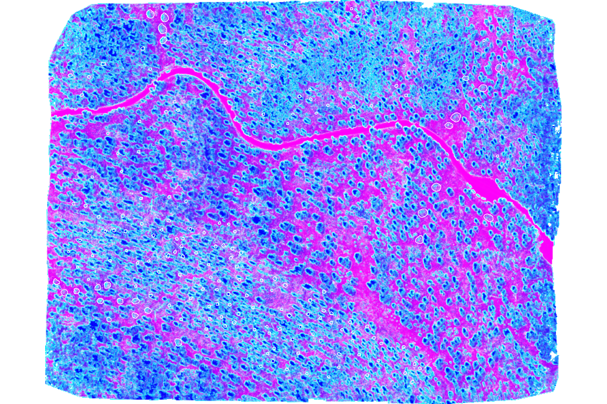
3.1.2 Raster Texture: GRVI
implement our rast_rodmanetal2019_fn function
rodmanetal2019_grvi_rast <- rast_rodmanetal2019_fn(
rast = grvi_rast
, rast_nm = "grvi"
, scale_to_1m = F
)## |---------|---------|---------|---------|========================================= |---------|---------|---------|---------|========================================= |---------|---------|---------|---------|========================================= |---------|---------|---------|---------|========================================= plot of these combined GRVI
terra::plotRGB(
rodmanetal2019_grvi_rast$composite
# , scale = c(255,7,520)
, stretch = "hist", colNA = "transparent"
)
# add polys
terra::plot(
slash_piles_polys %>% sf::st_transform(terra::crs(grvi_rast)) %>% terra::vect()
, add = T, border = "white", col = NA
)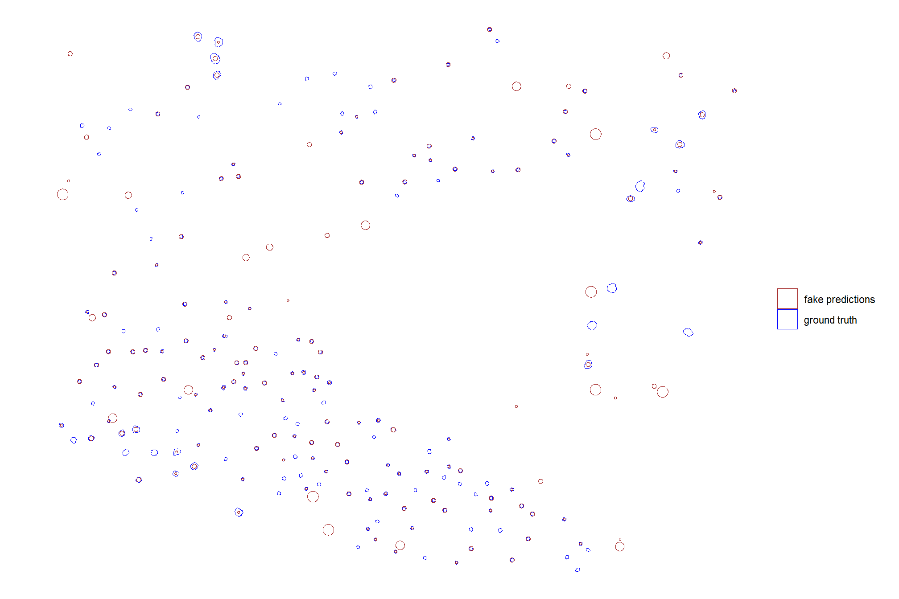
check out the local CV of GRVI
terra::plot(
rodmanetal2019_grvi_rast$local_cv
, col = scales::pal_grey(0, 1)(100)
, axes=F, legend = F
)
# add polys
terra::plot(
slash_piles_polys %>% sf::st_transform(terra::crs(grvi_rast)) %>% terra::vect()
, add = T, border = "blue", col = NA
)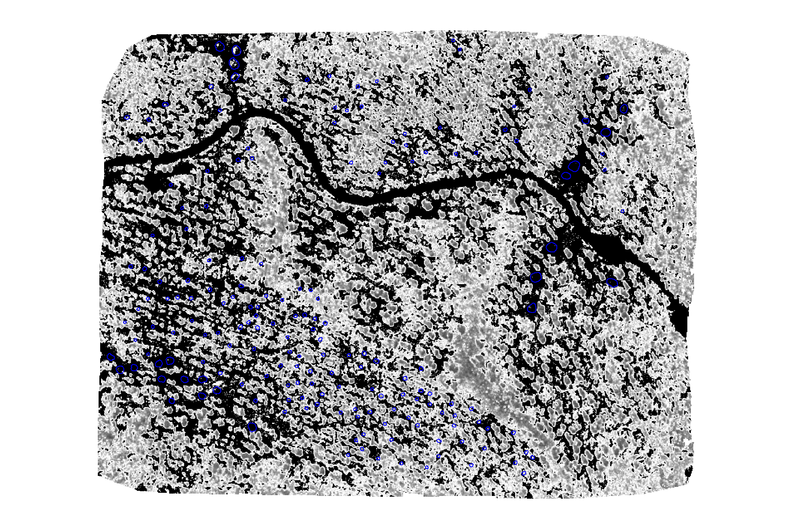
this metric looks promising as it indicates that piles are generally in areas with low CV…which indicates low variability, meaning the GRVI values are tightly clustered around the focal mean, suggesting consistency and stability.
3.1.3 Plot textural rasters
let’s look at these textural rasters for some of the piles
p_fn_temp <- function(
rn
, df = slash_piles_polys
, composite_rast = rodmanetal2019_grvi_rast$composite
, crs = terra::crs(ortho_rast)
, my_title = ""
) {
# scale the buffer based on the largest
d_temp <- df %>%
dplyr::arrange(tolower(comment), desc(diameter)) %>%
dplyr::slice(rn) %>%
sf::st_transform(crs)
# plt classifier
# convert to stars
comp_st <- composite_rast %>%
terra::subset(subset = c(1,2,3)) %>%
terra::crop(
d_temp %>% sf::st_buffer(20) %>% terra::vect()
) %>%
# terra::aggregate(fact = 2, fun = "mean", na.rm = T) %>%
stars::st_as_stars()
# convert to rgb
comp_rgb <- stars::st_rgb(
comp_st[,,,1:3]
, dimension = 3
, use_alpha = FALSE
# , stretch = "histogram"
, probs = c(0.002, 0.998)
, stretch = "percent"
)
# ggplot
comp_temp <- ggplot2::ggplot() +
stars::geom_stars(data = comp_rgb[]) +
ggplot2::scale_fill_identity(na.value = "transparent") + # !!! don't take this out or RGB plot will kill your computer
ggplot2::geom_sf(data = d_temp, fill = NA, color = "white", lwd = 0.3) +
ggplot2::scale_x_continuous(expand = c(0, 0)) +
ggplot2::scale_y_continuous(expand = c(0, 0)) +
ggplot2::labs(
x = ""
, y = ""
, subtitle = my_title
) +
ggplot2::theme_void() +
ggplot2::theme(
legend.position = "none" # c(0.5,1)
, legend.direction = "horizontal"
, legend.margin = margin(0,0,0,0)
, legend.text = element_text(size = 8)
, legend.title = element_text(size = 8)
, legend.key = element_rect(fill = "white")
# , plot.title = ggtext::element_markdown(size = 10, hjust = 0.5)
, plot.title = element_text(size = 8, hjust = 0.5, face = "bold")
, plot.subtitle = element_text(size = 6, hjust = 0.5, face = "italic")
)
plt_temp <- comp_temp
return(list("plt"=plt_temp,"d"=d_temp))
}
# combine 3
plt_combine_temp <- function(
rn
, df = slash_piles_polys %>% dplyr::filter(!is.na(comment))
, composite_rast1 = rodmanetal2019_panchromatic_rast$composite
, title1 = "panchromatic composite"
, composite_rast2 = rodmanetal2019_grvi_rast$composite
, title2 = "GRVI composite"
, crs = terra::crs(ortho_rast)
) {
# composite 1
ans1 <- p_fn_temp(
rn = rn
, df = df
, composite_rast = composite_rast1
, my_title = title1
, crs = crs
)
# composite 2
ans2 <- p_fn_temp(
rn = rn
, df = df
, composite_rast = composite_rast2
, my_title = title2
, crs = crs
)
# plt rgb
rgb_temp <-
ortho_plt_fn(ans1$d) +
ggplot2::geom_sf(data = ans1$d, fill = NA, color = "white", lwd = 0.3)
# combine
r <- ans1$plt + ans2$plt + rgb_temp
return(r)
}
# add pile locations
plt_list_grvi_comp <- sample(1:nrow(slash_piles_polys %>% dplyr::filter(!is.na(comment))),10) %>%
purrr::map(plt_combine_temp)
# plt_list_grvi_comp[[2]]combine the plots for a few piles
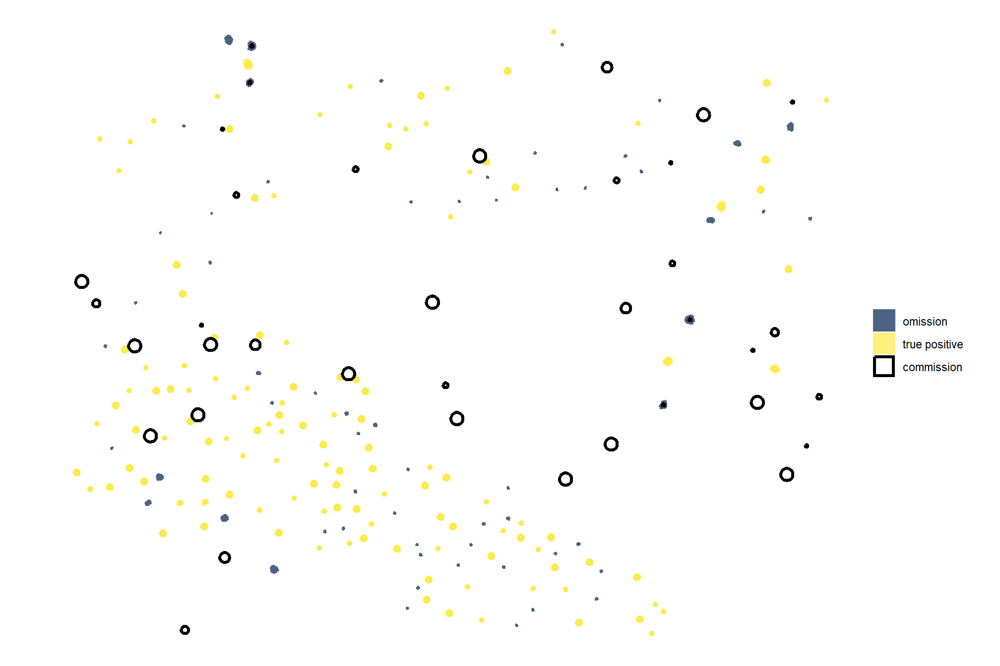
3.1.4 Features for classification
Goncalves et al. (2019) describe the general workflow of the OBIA approach for ecological applications based on Genetic Algorithms (GA) to optimize image segmentation parameters:
- Run the image segmentation: involves the partitioning of an image into a set of jointly exhaustive and mutually disjoint regions (a.k.a. segments, composed by multiple image pixels) that are internally more homogeneous and similar compared to adjacent ones;
- segmentation algorithms include: mean-shift; region growing; SNIC (Simple Non-iterative Clustering) and SLIC (Simple Linear Iterative Clustering)
- Load training data into the segmented image;
- Calculate segment statistics (e.g., mean, standard-deviation) for classification features;
- Merge training and segment statistics data (steps 2-3);
- Do train/test data partitions (e.g., 5-fold cross-validation);
- For each train/test set: 6.1. Train the supervised classifier; 6.2. Evaluate results for the test set;
- Return the average evaluation score across all train/test rounds (fitness value);
where:
- Segmentation features (step 1): a multi-layer raster dataset with features used only for the segmentation stage (e.g., spectral bands)
- Classification features (step 3): a multi-layer raster dataset with features used for classification (e.g., spectral data, band ratios, spectral vegetation indices, texture features, topographic data).
let’s combine our rasters into a raster stack and generate a data frame with individual cells as rows and covariates as columns
#rename composites
names(rodmanetal2019_panchromatic_rast$composite) <- c(
"panchromatic", "panchromatic_local_sd", "panchromatic_local_minima"
)
names(rodmanetal2019_panchromatic_rast$local_cv) <- c(
"panchromatic_local_cv"
)
names(rodmanetal2019_grvi_rast$composite) <- c(
"grvi", "grvi_local_sd", "grvi_local_minima"
)
names(rodmanetal2019_grvi_rast$local_cv) <- c(
"grvi_local_cv"
)
# raster stack
pred_rast <- c(
terra::subset(ortho_rast, c("red","green","blue"))
, rodmanetal2019_panchromatic_rast$composite
, rodmanetal2019_panchromatic_rast$local_cv
, rodmanetal2019_grvi_rast$composite
, rodmanetal2019_grvi_rast$local_cv
)
# mask NA values from original data
pred_rast <- pred_rast %>%
terra::mask(
ortho_rast %>%
terra::subset(c("red","green","blue")) %>%
cumsum() %>%
terra::subset(3) %>%
terra::subst(from = 0, to = 1, others = NA)
, inverse = T
)## |---------|---------|---------|---------|========================================= check out correlations between covariates
# investigate correlation among covariates
pred_rast %>%
terra::pairs(
maxcells = min(7777, terra::ncell(pred_rast)*.01)
)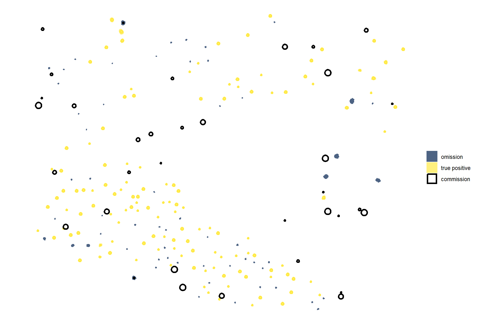
the panchromatic band itself doesn’t add much new information, let’s remove it and generate a data frame for training our clustering algorithms
# remove correlated layers
pred_rast <- terra::subset(
pred_rast
, subset = c("panchromatic")
, negate = T
)
# combine rasters as data frame
pred_df <- terra::as.data.frame(
pred_rast
, xy = T
, cell = T
) %>%
dplyr::mutate(
dplyr::across(
.cols = c(red,green,blue)
, .fns = ~ ifelse(.x==0,NA,.x)
)
)
# what is this data?
pred_df %>% dplyr::slice_sample(n=100) %>% dplyr::glimpse()## Rows: 100
## Columns: 13
## $ cell <dbl> 3783340, 12823481, 1188704, 3630013, 1394345…
## $ x <dbl> 499368.9, 499349.2, 499369.5, 499585.0, 4993…
## $ y <dbl> 4318015, 4317717, 4318100, 4318020, 4317680,…
## $ red <dbl> 109.89790, 108.89064, 22.85625, 112.62171, 1…
## $ green <dbl> 104.60313, 109.06528, 20.22625, 135.81041, 1…
## $ blue <dbl> 98.22230, 74.58000, 18.40992, 77.99252, 128.…
## $ panchromatic_local_sd <dbl> 133.68938, 76.37708, 104.15176, 108.46442, 8…
## $ panchromatic_local_minima <dbl> 0, 0, 0, 0, 0, 0, 0, 0, 0, 0, 0, 0, 0, 0, 0,…
## $ panchromatic_local_cv <dbl> 1.0549057, 0.7367595, 3.4507045, 1.1899530, …
## $ grvi <dbl> -0.0246840850, 0.0008012484, -0.0610456616, …
## $ grvi_local_sd <dbl> 0.10287406, 0.19633968, 0.31717706, 0.156255…
## $ grvi_local_minima <dbl> 0, 0, 1, 0, 0, 0, 0, 0, 0, 0, 0, 0, 0, 0, 0,…
## $ grvi_local_cv <dbl> 0.000000, 2.000000, 5.000000, 1.888364, 0.00…3.2 Pixel-based: unsupervised classification
Unsupervised image classification could be used to identify slash piles by grouping pixels with similar spectral characteristics. We’ll call any method that implements classification at the pixel level like the unsupervised classification approach tested here “pixel-based image analysis” versus to OBIA. Unsupervised image classification uses algorithms like K-means to find natural clusters within spectral data and can use other inputs like elevation or spectral indices. This method operates without requiring pre-defined training data, making it useful when field data is limited. The output assigns each pixel to a class, which the user then interprets to potentially identify slash piles based on their distinct spectral signatures and elevated height. While effective for initial classification and pattern recognition, unsupervised methods can produce numerous classes that require manual interpretation and may be less accurate than supervised approaches without ground truth data.
let’s test out kmeans clustering and see what we get
set.seed(111)
# Create 6 clusters, allow 500 iterations, start with 5 random sets using "Lloyd"
kmncluster <- stats::kmeans(
pred_df %>%
dplyr::select(-c(cell,x,y)) %>%
# we can't have NA values in kmeans
dplyr::mutate(
dplyr::across(
.cols = dplyr::everything()
, .fns = ~ as.numeric(ifelse(is.na(.x),-99,.x))
)
)
, centers=6
, iter.max = 500
, nstart = 5
, algorithm="Lloyd"
)
# kmeans returns an object of class kmeans
str(kmncluster)## List of 9
## $ cluster : Named int [1:15638952] 1 1 1 1 1 1 1 1 1 1 ...
## ..- attr(*, "names")= chr [1:15638952] "2744" "2745" "2746" "2747" ...
## $ centers : num [1:6, 1:10] 27 92.8 180.8 142.5 138.1 ...
## ..- attr(*, "dimnames")=List of 2
## .. ..$ : chr [1:6] "1" "2" "3" "4" ...
## .. ..$ : chr [1:10] "red" "green" "blue" "panchromatic_local_sd" ...
## $ totss : num 1.94e+11
## $ withinss : num [1:6] 5.06e+09 5.27e+09 6.47e+09 6.28e+09 7.52e+09 ...
## $ tot.withinss: num 3.72e+10
## $ betweenss : num 1.57e+11
## $ size : int [1:6] 2193126 2736917 2674953 4350229 1839787 1843940
## $ iter : int 159
## $ ifault : NULL
## - attr(*, "class")= chr "kmeans"put the kmeans clusters into a raster
# make a blank raster
kmeans_cluster_rast <- terra::rast(ortho_rast, nlyr=1)
# fill the raster
kmeans_cluster_rast[pred_df$cell] <- kmncluster$cluster
# what?
kmeans_cluster_rast## class : SpatRaster
## size : 3567, 4552, 1 (nrow, ncol, nlyr)
## resolution : 0.15, 0.15 (x, y)
## extent : 499274.8, 499957.6, 4317604, 4318139 (xmin, xmax, ymin, ymax)
## coord. ref. : WGS 84 / UTM zone 13N (EPSG:32613)
## source(s) : memory
## name : lyr1
## min value : 1
## max value : 6there should be at most 6 clusters
## layer value count
## 1 1 1 2193126
## 2 1 2 2736917
## 3 1 3 2674953
## 4 1 4 4350229
## 5 1 5 1839787
## 6 1 6 1843940plot the kmeans unsupervised classfication result
terra::plot(
kmeans_cluster_rast
, col = viridis::turbo(n=6)
, axes=F, legend = F
)
# add polys
terra::plot(
slash_piles_polys %>% sf::st_transform(terra::crs(grvi_rast)) %>% terra::vect()
, add = T, border = "white", col = NA
)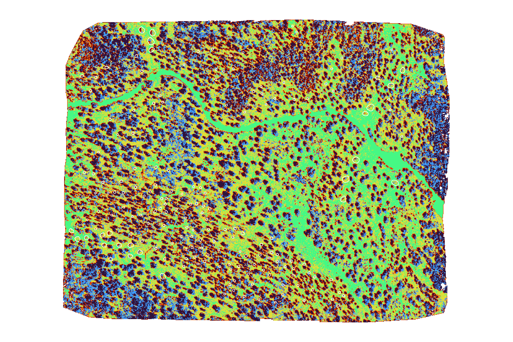
neat, let’s see if the piles are classified by making a custom function to plot the classified raster and RGB side-by-side
p_fn_temp <- function(
rn
, df = slash_piles_polys %>% dplyr::filter(!is.na(comment))
, cluster_rast = kmeans_cluster_rast
, crs = terra::crs(ortho_rast)
) {
# scale the buffer based on the largest
d_temp <- df %>%
dplyr::arrange(tolower(comment), desc(diameter)) %>%
dplyr::slice(rn) %>%
sf::st_transform(crs)
# plt
rgb_temp <-
ortho_plt_fn(d_temp) +
ggplot2::geom_sf(data = d_temp, fill = NA, color = "white", lwd = 1)
# plt classifier
class_temp <- ggplot2::ggplot() +
ggplot2::geom_tile(
data = cluster_rast %>%
terra::crop(
d_temp %>% sf::st_buffer(20) %>% terra::vect()
) %>%
terra::as.data.frame(xy=T) %>%
dplyr::rename(f=3)
, ggplot2::aes(x=x,y=y,fill=as.factor(f))
) +
ggplot2::geom_sf(data = d_temp, fill = NA, color = "white", lwd = 1) +
ggplot2::scale_fill_manual(
values = c(
"1" = viridis::turbo(n=6)[1]
, "2" = viridis::turbo(n=6)[2]
, "3" = viridis::turbo(n=6)[3]
, "4" = viridis::turbo(n=6)[4]
, "5" = viridis::turbo(n=6)[5]
, "6" = viridis::turbo(n=6)[6]
# , "7" = viridis::turbo(n=10)[7]
# , "8" = viridis::turbo(n=10)[8]
# , "9" = viridis::turbo(n=10)[9]
# , "10" = viridis::turbo(n=10)[10]
)
, na.value = "transparent"
) +
ggplot2::scale_x_continuous(expand = c(0, 0)) +
ggplot2::scale_y_continuous(expand = c(0, 0)) +
ggplot2::labs(
x = ""
, y = ""
, fill = ""
) +
ggplot2::theme_void() +
ggplot2::theme(
legend.position = "left" # c(0.5,1)
, legend.margin = margin(0,0,0,0)
, legend.text = element_text(size = 6)
, legend.title = element_text(size = 6)
, legend.key = element_rect(fill = "white")
# , plot.title = ggtext::element_markdown(size = 10, hjust = 0.5)
, plot.title = element_text(size = 8, hjust = 0.5, face = "bold")
, plot.subtitle = element_text(size = 6, hjust = 0.5, face = "italic")
)
plt_temp <- class_temp+rgb_temp
return(plt_temp)
}
# add pile locations
plt_list_kmeans <- sample(1:nrow(slash_piles_polys %>% dplyr::filter(!is.na(comment))),10) %>%
purrr::map(p_fn_temp)combine the plots for a few piles
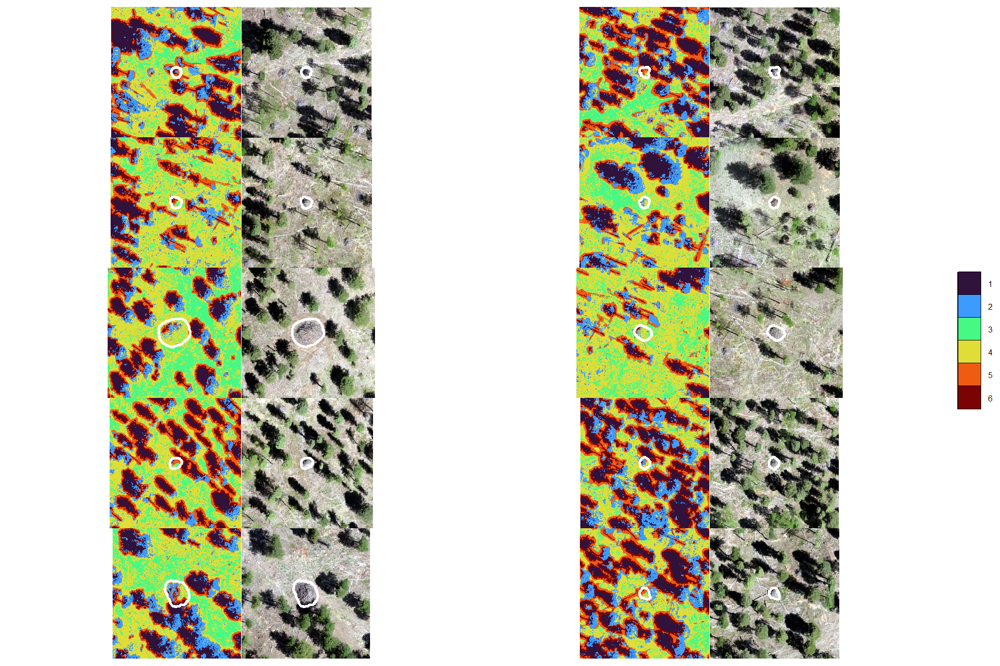
there is no discernible pattern between the kmeans classes and the slash piles because the lighting and conditions around the piles are not consistent. this result also highlights the challenges we’ll likely face with pixel-based classification methods
3.3 Pixel-based: supervised classification
we’ll start with a pixel-based classification using the image-annotated pile polygons to train a classification model
first, let’s set aside some piles for use in validation
set.seed(333)
# 20% will be used for validation
slash_piles_polys <- slash_piles_polys %>%
dplyr::left_join(
slash_piles_polys %>%
sf::st_drop_geometry() %>%
dplyr::filter(!is.na(comment)) %>%
dplyr::distinct(pile_id) %>%
dplyr::slice_sample(prop = 0.2) %>%
dplyr::mutate(is_training = F)
, by = "pile_id"
) %>%
dplyr::mutate(is_training = dplyr::coalesce(is_training, T))
slash_piles_points <- slash_piles_points %>%
dplyr::left_join(
slash_piles_polys %>%
sf::st_drop_geometry() %>%
dplyr::distinct(objectid, is_training)
, by = "objectid"
)
# slash_piles_points %>% sf::st_drop_geometry() %>% dplyr::count(is_training)first, we’ll generate a set of sample points to extract raster values from to build our training data with covariates
training_points <- dplyr::bind_rows(
# sample only from non-pile parts of the raster
terra::mask(
grvi_rast
, slash_piles_polys %>% # use ALL piles (image-annotated and field-collected)
sf::st_transform(terra::crs(grvi_rast)) %>%
terra::vect()
, inverse = T
) %>%
terra::spatSample(size = 5000, na.rm = T, xy = T) %>%
sf::st_as_sf(coords = c("x", "y"), crs = terra::crs(grvi_rast)) %>%
dplyr::mutate(
is_pile = 0
) %>%
dplyr::select(is_pile)
# sample points within piles
, slash_piles_polys %>%
dplyr::filter(
is_training
) %>%
sf::st_transform(terra::crs(grvi_rast)) %>%
terra::vect() %>%
terra::spatSample(size = 1000) %>%
sf::st_as_sf() %>%
dplyr::mutate(
is_pile = 1
) %>%
dplyr::select(is_pile)
) %>%
dplyr::mutate(
id = dplyr::row_number()
, is_pile = as.factor(is_pile)
, x = sf::st_coordinates(.)[,1]
, y = sf::st_coordinates(.)[,2]
)
####### validation points since we'll validate at the pixel level
validation_points <- dplyr::bind_rows(
# sample only from non-pile parts of the raster
terra::mask(
grvi_rast
, slash_piles_polys %>% # use ALL piles (image-annotated and field-collected)
sf::st_transform(terra::crs(grvi_rast)) %>%
terra::vect()
, inverse = T
) %>%
# mask the training points as well
terra::mask(
training_points %>% terra::vect()
, inverse = T
) %>%
terra::spatSample(size = 5000, na.rm = T, xy = T) %>%
sf::st_as_sf(coords = c("x", "y"), crs = terra::crs(grvi_rast)) %>%
dplyr::mutate(
is_pile = 0
) %>%
dplyr::select(is_pile)
# sample points within piles
, slash_piles_polys %>%
dplyr::filter(
!is_training
) %>%
sf::st_transform(terra::crs(grvi_rast)) %>%
terra::vect() %>%
terra::spatSample(size = 1000) %>%
sf::st_as_sf() %>%
dplyr::mutate(
is_pile = 1
) %>%
dplyr::select(is_pile)
) %>%
dplyr::mutate(
id = dplyr::row_number()
, is_pile = as.factor(is_pile)
, x = sf::st_coordinates(.)[,1]
, y = sf::st_coordinates(.)[,2]
)plot our RGB with training piles (white), validation piles (black), pile sample points (red), and non-pile sample points (blue)
# let's check this out
terra::plotRGB(ortho_rast, stretch = "lin", colNA = "transparent")
terra::plot(
slash_piles_polys %>%
dplyr::filter(is_training) %>%
sf::st_transform(terra::crs(ortho_rast)) %>% terra::vect()
, add = T, border = "white", col = NA, lwd = 1.2
)
terra::plot(
slash_piles_polys %>%
dplyr::filter(!is_training) %>%
sf::st_transform(terra::crs(ortho_rast)) %>% terra::vect()
, add = T, border = "black", col = NA, lwd = 1.2
)
terra::plot(training_points %>% dplyr::filter(is_pile==1) %>% terra::vect(), col = "red", cex = 0.5, add = T)
terra::plot(training_points %>% dplyr::filter(is_pile==0) %>% terra::vect(), col = "blue", cex = 0.5, add = T)extract the raster cell values from each layer in our RGB-based raster data, these values will be the predictor variables
#############################
#extract covariate data at point locations
#############################
training_df <-
terra::extract(
pred_rast
, training_points %>%
terra::vect()
, ID = F
) %>%
dplyr::bind_cols(
training_points %>%
dplyr::select(id,is_pile,x,y)
) %>%
## make sure no data is missing
dplyr::filter(dplyr::if_all(dplyr::everything(), ~ !is.na(.x)))
# ## square continuous vars?
# dplyr::mutate(dplyr::across(
# .cols = dplyr::where(is.numeric) & !c(id, is_pile, x, y) & !tidyselect::ends_with("local_minima")
# , .fns = list(sq)
# , .names = "{.col}_sq"
# ))
##### and validation data to perform accuracy assesment at the pixel level
validation_df <-
terra::extract(
pred_rast
, validation_points %>%
terra::vect()
, ID = F
) %>%
dplyr::bind_cols(
validation_points %>%
dplyr::select(id,is_pile,x,y)
) %>%
## make sure no data is missing
dplyr::filter(dplyr::if_all(dplyr::everything(), ~ !is.na(.x)))
# ## square continuous vars?
# dplyr::mutate(dplyr::across(
# .cols = dplyr::where(is.numeric) & !c(id, is_pile, x, y) & !tidyselect::ends_with("local_minima")
# , .fns = list(sq)
# , .names = "{.col}_sq"
# ))compare training and validation data to ensure that they are similar (i.e. we drew a big enough sample)
dplyr::bind_rows(
training_df %>% sf::st_drop_geometry() %>% dplyr::mutate(dta_set = "Training")
, validation_df %>% sf::st_drop_geometry() %>% dplyr::mutate(dta_set = "Validation")
) %>%
dplyr::select(-c(geometry,dplyr::ends_with("_sq"))) %>%
dplyr::mutate_if(is.factor, as.numeric) %>%
tidyr::pivot_longer(
cols = -c(id, is_pile, dta_set)
, names_to = "covariate"
, values_to = "value"
) %>%
dplyr::mutate(covariate = stringr::str_replace_all(covariate,"_", " ")) %>%
ggplot(mapping = aes(x = value, color = dta_set, fill = dta_set, group = dta_set)) +
geom_density(alpha=0.6) +
facet_wrap(
facets = vars(covariate), scales = "free"
, labeller = label_wrap_gen(width = 25, multi_line = TRUE)
) +
scale_color_viridis_d(option = "cividis") +
scale_fill_viridis_d(option = "cividis") +
labs(
title = "Distribution of Model Covariates"
, subtitle = paste0(
"by Training (n="
, nrow(training_df) %>% scales::comma(accuracy = 1)
, ") and Validation (n="
, nrow(validation_df) %>% scales::comma(accuracy = 1)
, ") data"
)
) +
theme_light() +
theme(
legend.position = "top"
, legend.title = element_blank()
, plot.title = element_text(size = 10)
, plot.subtitle = element_text(size = 9)
, axis.title = element_text(size = 7)
, axis.text = element_text(size = 6)
) +
guides(color = guide_legend(override.aes = list(size = 5)))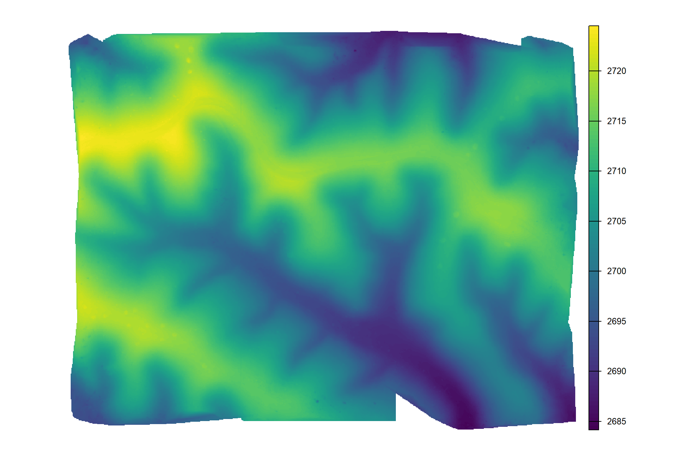
we’ll use a random forest model to predict raster values
# Tune on the full data if below threshold
tune_result_temp <- randomForest::tuneRF(
y = training_df$is_pile
, x = training_df %>% sf::st_drop_geometry() %>% dplyr::select(-c(id,is_pile,geometry))
, ntreeTry = 500
, stepFactor = 1
, improve = 0.03
, plot = F
, trace = F
)
# Extract the optimal mtry value
optimal_mtry_temp <- tune_result_temp %>%
dplyr::as_tibble() %>%
dplyr::filter(OOBError==min(OOBError)) %>%
dplyr::filter(dplyr::row_number() == 1) %>%
dplyr::pull(mtry) %>%
as.numeric()
# pass to random forest model
mod_rf <- randomForest::randomForest(
y = training_df$is_pile
, x = training_df %>% sf::st_drop_geometry() %>% dplyr::select(-c(id,is_pile,geometry))
, mtry = optimal_mtry_temp
, na.action = na.omit
, ntree = 500
)random forest variable importance plot
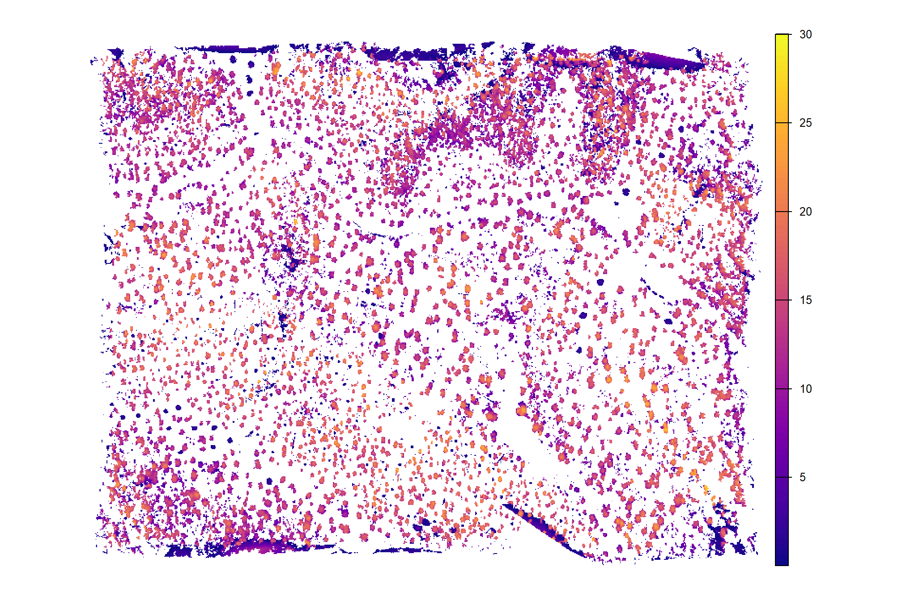
predict raster values
# x,y rasters
y_rast_temp <- terra::init(pred_rast[[1]], "y")
names(y_rast_temp) <- "y"
x_rast_temp <- terra::init(pred_rast[[1]], "x")
names(x_rast_temp) <- "x"
# predict
rf_pred_rast <- terra::predict(
object = c(
pred_rast
, x_rast_temp, y_rast_temp
)
, model = mod_rf
, na.rm = T
# , type = "prob"
)## |---------|---------|---------|---------|========================================= terra::coltab(rf_pred_rast) <- data.frame(value=1:2, col=c("gray", "khaki"))
levels(rf_pred_rast) <- data.frame(value=1:2, col=c("non-pile", "pile"))plot pixel-level predictions
#plot
terra::plot(rf_pred_rast)
terra::plot(
slash_piles_polys %>%
dplyr::filter(is_training) %>%
sf::st_transform(terra::crs(ortho_rast)) %>% terra::vect()
, add = T, border = "white", col = NA, lwd = 1.2
)
terra::plot(
slash_piles_polys %>%
dplyr::filter(!is_training) %>%
sf::st_transform(terra::crs(ortho_rast)) %>% terra::vect()
, add = T, border = "black", col = NA, lwd = 1.2
)
evaluate model performance based on the Area under the Receiver Operating Characteristic (ROC) Curve (AUC) criterion (an AUC value of 0.5 can be interpreted as the model performing no better than a random prediction). Higher AUC values indicate that the model is better at predicting “absence” classes as “absence” (true negative) and “presence” classes as “presence” (true positive).
validation_df <-
validation_df %>%
dplyr::bind_cols(
terra::extract(
rf_pred_rast
, validation_points %>% terra::vect()
, ID = F
) %>%
dplyr::rename(is_pile_predicted=1)
)
PresenceAbsence::auc.roc.plot(
validation_df %>%
sf::st_drop_geometry() %>%
dplyr::select(id, is_pile, is_pile_predicted) %>%
dplyr::mutate(dplyr::across(tidyselect::starts_with("is_pile"), ~ as.numeric(.x)-1 ))
, main = "Random Forest"
)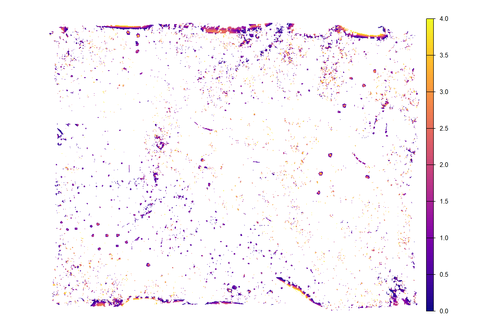
now lets check the confusion matrix of the pixel-based approach where we evaluate omission rate (false negative rate or miss rate), commission rate (false positive rate), precision, recall (detection rate), and the F-score metric. As a reminder, true positive (\(TP\)) instances correctly match ground truth instances with a prediction, commission tree predictions do not match a ground truth tree (false positive; \(FP\)), and omissions are ground truth instances for which no predictions match (false negative; \(FN\))
\[\textrm{omission rate} = \frac{FN}{TP+FN}\]
\[\textrm{commission rate} = \frac{FP}{TP+FP}\]
\[\textrm{precision} = \frac{TP}{TP+FP}\]
\[\textrm{recall} = \frac{TP}{TP+FN}\]
\[ \textrm{F-score} = 2 \times \frac{\bigl(precision \times recall \bigr)}{\bigl(precision + recall \bigr)} \]
confusion_matrix_temp <-
validation_df %>%
dplyr::mutate(dplyr::across(tidyselect::starts_with("is_pile"), ~ as.numeric(.x)-1 )) %>%
dplyr::rename(
presence = is_pile
, estimate = is_pile_predicted
) %>%
dplyr::count(presence,estimate) %>%
dplyr::mutate(
is_false = as.factor(ifelse(presence!=estimate,1,0))
, presence_fact = factor(presence,levels = 0:1,labels = c("Observed Absent", "Observed Present"))
, estimate_fact = factor(estimate,levels = 0:1,labels = c("Predicted Absent", "Predicted Present"))
, pct = n/sum(n)
)
# first function takes df with cols tp_n, fp_n, and fn_n to calculate rate
confusion_matrix_scores_fn <- function(df) {
df %>%
dplyr::mutate(
omission_rate = dplyr::case_when(
(tp_n+fn_n) == 0 ~ as.numeric(NA)
, T ~ fn_n/(tp_n+fn_n)
) # False Negative Rate or Miss Rate
, commission_rate = dplyr::case_when(
(tp_n+fp_n) == 0 ~ as.numeric(NA)
, T ~ fp_n/(tp_n+fp_n)
) # False Positive Rate
, precision = dplyr::case_when(
(tp_n+fp_n) == 0 ~ as.numeric(NA)
, T ~ tp_n/(tp_n+fp_n)
)
, recall = dplyr::case_when(
(tp_n+fn_n) == 0 ~ as.numeric(NA)
, T ~ tp_n/(tp_n+fn_n)
)
, f_score = dplyr::case_when(
is.na(precision) | is.na(recall) ~ as.numeric(NA)
, (precision+recall) == 0 ~ 0
, T ~ 2 * ( (precision*recall)/(precision+recall) )
)
)
}
confusion_matrix_scores_temp <- confusion_matrix_scores_fn(
dplyr::tibble(
tp_n = confusion_matrix_temp %>% dplyr::filter(presence==1 & estimate == 1) %>% dplyr::pull(n)
, fn_n = confusion_matrix_temp %>% dplyr::filter(presence==1 & estimate == 0) %>% dplyr::pull(n)
, fp_n = confusion_matrix_temp %>% dplyr::filter(presence==0 & estimate == 1) %>% dplyr::pull(n)
)
)
# plot
ggplot(data = confusion_matrix_temp, mapping = aes(y = estimate_fact, x = presence_fact)) +
geom_tile(aes(fill = is_false), color = "white",alpha=0.8) +
geom_text(aes(label = scales::comma(n,accuracy=1)), vjust = 1,size = 8) +
geom_text(aes(label = scales::percent(pct,accuracy=0.1)), vjust = 3.5, size=5) +
scale_fill_manual(values= c("turquoise","tomato2")) +
scale_x_discrete(position = "top") +
labs(
y = "Predicted"
, x = "Observed"
, subtitle = paste0(
"True positive rate (recall) = "
, confusion_matrix_scores_temp$recall %>%
scales::percent(accuracy = 0.1)
, "\nPrecision (PPV) = "
, confusion_matrix_scores_temp$precision %>%
scales::percent(accuracy = 0.1)
, "\nF1-score = "
, confusion_matrix_scores_temp$f_score %>%
scales::percent(accuracy = 0.1)
)
) +
theme_light() +
theme(
legend.position = "none"
, panel.grid = element_blank()
, plot.title = element_text(size = 9)
, plot.subtitle = element_text(size = 9)
)
that’s not very good as we could tell from the prediction map
3.4 Object-based image analysis (OBIA)
OBIA is a technique (or a set of techniques) used to analyze digital images that was developed relatively recently in comparison to “classic” pixel-based image approaches (Burnett and Blaschke 2003). Goncalves et al. (2019) describe a general OBIA approach and created the SegOptim package to execute this framework. However, their package relies on 3rd party software to implement the initial image segmentation. The OTBsegm package is another package that relies on 3rd party software to implement image segmentation. Alternatively, imageseg is an R package for deep learning-based image segmentation (Niedballa et al. 2022).
An alternative that does not require 3rd party software and works entirely within the R framework is the OpenImageR package.
3.4.1 Training data
Training data is described as “typically a single-layer SpatRaster (from terra package) containing samples for training a classifier. The labels, classes or categories should be coded as integers {0,1} for single-class problems or, {1,2,…,n} for multi-class problems.” We just have a single-class problem of classification with two mutually exclusive levels: piles and non-piles. Other examples include: species presence/absence, burned/unburned, cut/uncut forest.
first, we’ll make a raster covering the entire study area with cells classified based on the pile polygon locations
class_rast <-
ortho_rast[[1]] %>%
# terra::subst(from = 0, to = NA) %>% ## 0 values to NA which is specific to this data
terra::clamp(lower=0,upper=0) %>%
terra::mask(
slash_piles_polys %>% # use ALL piles (image-annotated and field-collected)
sf::st_transform(terra::crs(ortho_rast)) %>%
terra::vect()
, inverse = T
, updatevalue = 1
)
# terra::plot(class_rast)now we’ll make a grid of 0.25 ha to sample from to define our training versus validation areas. we’ll implement simple random sampling from this 0.25 ha grid.
after we make the sample area, we’ll sample from our classfied raster
# generates the grid
sample_grid <- ortho_rast[[1]] %>%
terra::clamp(lower=0,upper=0) %>%
terra::aggregate(fact = sqrt(10000*0.25)/terra::res(ortho_rast[[1]])[1])
# determins training tiles from the grid
set.seed(66)
sample_grid <-
terra::init(sample_grid, "cell") %>%
terra::subst(
from = sample(1:terra::ncell(sample_grid), size = floor(terra::ncell(sample_grid)*0.7))
, to = 1
, others = NA
)
# terra::plot(sample_grid) # emmental
# sample from the classified raster
class_rast_training <-
class_rast %>%
terra::mask(terra::as.polygons(sample_grid))check out the area we’ll use for training with the area for validation dimmed
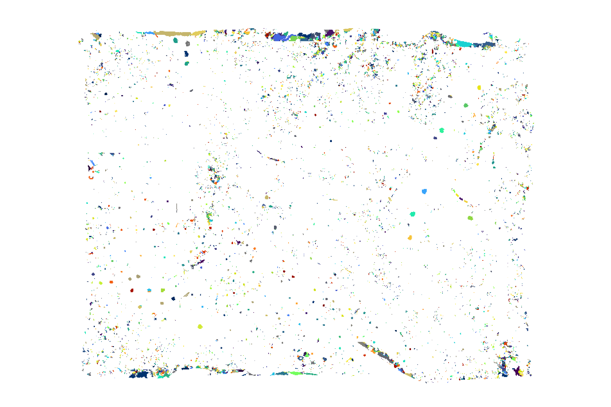
3.4.2 OpenImageR package SLIC image segmentation
the OpenImageR package makes the Simple Linear Iterative Clustering (SLIC) clustering algorithm (Achanta et al. 2012) available in R. SLIC takes an image and segments it into “superpixels.” These superpixels are compact, nearly uniform regions that adhere well to image boundaries. The key idea is that within a superpixel, pixels are likely to belong to the same object or land cover type. This is a crucial first step because subsequent classification will be performed on these superpixels, not individual pixels.
# the e1071 package is a popular choice for SVM implementation in R, providing a straightforward interface for training and evaluation.
# remotes::install_github('mlampros/OpenImageR')
# remotes::install_github('mlampros/SuperpixelImageSegmentation')
library("OpenImageR")
library("SuperpixelImageSegmentation")
# list.files(system.file("tmp_images", package = "OpenImageR"))
# system.file("tmp_images", "slic_im.png", package = "OpenImageR") %>%
# terra::rast() %>%
# # terra::subset(1) %>%
# # terra::plot()
# terra::plotRGB()
#### save files to disk as required by package
tempdir_temp <- tempdir()
fpath_train <- file.path(tempdir_temp, "train.tif")
fpath_seg <- file.path(tempdir_temp, "seg.tif")
fpath_class <- file.path(tempdir_temp, "class.tif")
# write
terra::writeRaster(class_rast_training, filename = fpath_train, overwrite = T)
terra::writeRaster(
ortho_rast %>% terra::subset(c("red","green","blue"))
, filename = fpath_seg
, overwrite = T
)
terra::writeRaster(
pred_rast # includes indicies and textural as well as RGB
, filename = fpath_class
, overwrite = T
)
terra::mask(
pred_rast
, ortho_rast %>%
terra::subset(c("red","green","blue")) %>%
cumsum() %>%
terra::subset(3) %>%
terra::subst(from = 0, to = 1, others = NA)
, inverse = T
) %>%
terra::subset(1) %>%
terra::plot()## |---------|---------|---------|---------|========================================= 
we’ll implement the SLICO variation of SLIC because the user does not need to define the compactness parameter or try different values of it. SLICO adaptively chooses the compactness parameter for each superpixel differently. This generates regular shaped superpixels in both textured and non textured regions alike. The improvement comes with hardly any compromise on the computational efficiency - SLICO continues to be as fast as SLIC (How is SLICO different from SLIC?)
#--------------
# "slico" method
#--------------
# readImage on our RGB raster for segmentation
im_temp <- OpenImageR::readImage(fpath_seg)
# str(im_temp)
## number of superpixels to use
## set this to extent/minimum expected pile area?
sp_temp <- floor(
# raster area
( terra::cellSize(ortho_rast[[1]])[1]*terra::ncell(ortho_rast[[1]]) ) /
# expected pile area
(
slash_piles_polys %>% dplyr::mutate(area = sf::st_area(.) %>% as.numeric()) %>%
dplyr::pull(area) %>%
quantile(probs = 0.33)
)
) %>%
max(200) # 200 = function default
try_superpixels_fn <- function(
input_image
, method = "slico"
# number of superpixels to use
, superpixel = 200
# numeric value specifying the compactness parameter.
# The compactness parameter is needed only if method is "slic". The "slico" method adaptively chooses
# the compactness parameter for each superpixel differently
, compactness = 20
# If TRUE then the resulted slic or slico data will be returned
, return_slic_data = TRUE
# If TRUE then the Lab data will be returned ( the Lab-colour format )
, return_labels = TRUE
# If not an empty string ("") then it should be a path to the output file with extension .bin
, write_slic = ""
, verbose = TRUE
) {
# make sure sp is integer
new_sp <- dplyr::coalesce(superpixel, 200) %>% floor()
# make a list of backup sp
try_sp <- seq(from = max(floor(new_sp*0.95),10), to = max(floor(new_sp*1.05),10), by = 1) %>%
base::setdiff(new_sp) %>%
sample()
# safe it
safe_superpixels <- purrr::safely(OpenImageR::superpixels)
# while loop to handle superpixel errors
xx <- 1
while(xx!=0 && xx<length(try_sp)) {
# superpixels
superpixels_slico_ans <- safe_superpixels(
input_image = input_image
# Either "slic" or "slico"
, method = method
# number of superpixels to use
, superpixel = new_sp
# numeric value specifying the compactness parameter.
# The compactness parameter is needed only if method is "slic". The "slico" method adaptively chooses
# the compactness parameter for each superpixel differently
# , compactness = 20
# If TRUE then the resulted slic or slico data will be returned
, return_slic_data = return_slic_data
# If TRUE then the Lab data will be returned ( the Lab-colour format )
, return_labels = return_labels
# If not an empty string ("") then it should be a path to the output file with extension .bin
, write_slic = write_slic
, verbose = verbose
)
# check
if(is.null(superpixels_slico_ans$error)){
# just get the result
superpixels_slico_ans <- superpixels_slico_ans$result
xx <- 0
}else{
if(xx==1){message("attempting to adjust `superpixel` size.......")}
# just get the result (in case we exit the while)
superpixels_slico_ans <- superpixels_slico_ans$result
new_sp <- try_sp[xx]
xx <- xx+1
}
}
if(is.null(superpixels_slico_ans)){stop("`superpixel` size not successfull, try a different value")}
return(superpixels_slico_ans)
}
# run it
superpixels_slico_ans <- try_superpixels_fn(input_image = im_temp, method = "slico", superpixel = sp_temp)## The input image has the following dimensions: 3567 4552 3
## The 'slico' method will be utilized!
## The output image has the following dimensions: 3567 4552 3what did we get back?
## List of 2
## $ slic_data: num [1:3567, 1:4552, 1:3] 0 0 0 0 0 0 0 0 0 0 ...
## $ labels : num [1:3567, 1:4552] 0 0 0 0 0 0 0 0 0 0 ...# superpixels_slico_ans$labels %>% length()
# superpixels_slico_ans$labels %>% unique() %>% length()
# superpixels_slico_ans$labels %>% dplyr::as_tibble() %>% ncol()
# superpixels_slico_ans$labels %>% dplyr::as_tibble() %>% nrow()
# superpixels_slico_ans$slic_data %>% str()let’s put the superpixels into a raster
# use the ortho template so we get the projection and then fill with values
superpixels_slico_rast <- ortho_rast %>% terra::subset(1)
# fill raster with the superpixels
superpixels_slico_rast[] <- superpixels_slico_ans$labels %>% terra::rast()
superpixels_slico_rast <- terra::as.factor(superpixels_slico_rast)
# reset the colors
terra::coltab(superpixels_slico_rast) <- data.frame(
value = terra::minmax(superpixels_slico_rast)[1]:terra::minmax(superpixels_slico_rast)[2]
, col = c(
viridis::turbo(terra::unique(superpixels_slico_rast) %>% nrow() %>% `*`(1/3) %>% ceiling(), alpha = 0.35)
, viridis::viridis(terra::unique(superpixels_slico_rast) %>% nrow() %>% `*`(1/3) %>% ceiling(), alpha = 0.35)
, viridis::cividis(terra::unique(superpixels_slico_rast) %>% nrow() %>% `*`(1/3) %>% ceiling(), alpha = 0.35)
) %>%
sample(size = (terra::unique(superpixels_slico_rast) %>% nrow()))
)
# # plot
# superpixels_slico_rast %>% terra::plot(legend = F, axes = F)let’s look at the superpixels overlaid on the RGB image with the slash pile locations (blue)
terra::plotRGB(ortho_rast, stretch = "lin", colNA = "black")
terra::plot(superpixels_slico_rast, add = T, alpha = 0.2, border = "white")
# add polys
terra::plot(
slash_piles_polys %>% sf::st_transform(terra::crs(ortho_rast)) %>% terra::vect()
, add = T, border = "blue", col = NA
)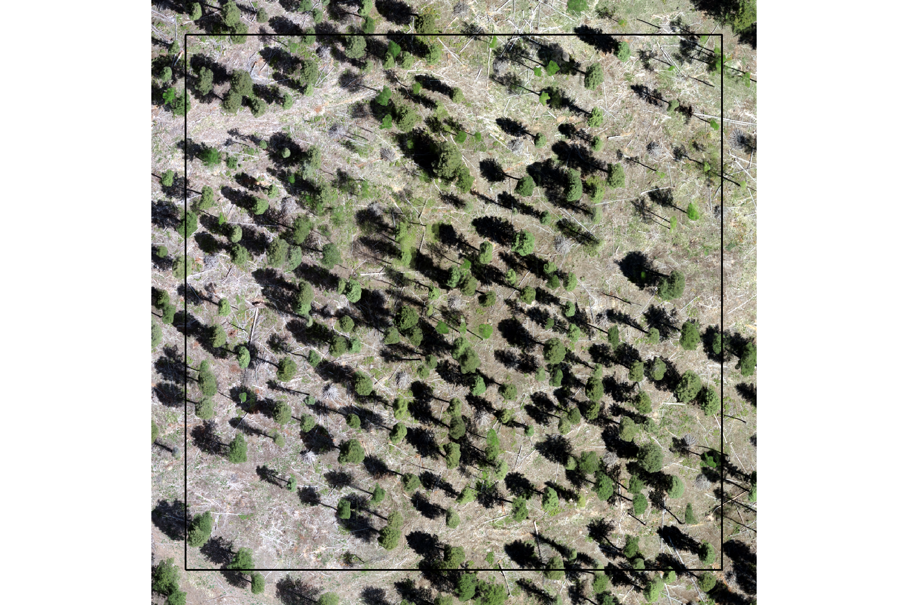
# OpenImageR::NormalizeObject(superpixels_slico_ans$slic_data) %>%
# grDevices::as.raster() %>%
# graphics::plot()that’s neat, the superpixels are moderately aligned with the large machine piles but are generally too large for the smaller hand piles
the steps in the OBIA approach workflow described by Goncalves et al. (2019) would be:
- Image Segmentation (e.g. using SLIC) as demonstrated above
- Feature Extraction for Superpixels: instead of using individual pixel values, extract features that describe each superpixel (e.g. spectral bands, band ratios, textural features)
- Use labeled training data to assign superpixels to their respective classes and perform classifier training (i.e. using random forest, support vector machines, etc.)
- Once the classifier is trained, you apply it to the features of all the unlabeled superpixels in the image
3.4.2.1 Feature Extraction for Superpixels
let’s classify the superpixels we generated using SLICO
- Image Segmentation (e.g. using SLIC) as demonstrated above
- Feature Extraction for Superpixels: instead of using individual pixel values, extract features that describe each superpixel (e.g. spectral bands, band ratios, textural features)
- Use labeled training data to assign superpixels to their respective classes and perform classifier training (i.e. using random forest, support vector machines, etc.)
- Once the classifier is trained, you apply it to the features of all the unlabeled superpixels in the image
# terra::plot(superpixels_slico_rast, legend = F)
# terra::values(superpixels_slico_rast) %>% unique() %>% length()
# terra::as.polygons(superpixels_slico_rast, aggregate = T, values = T) %>% terra::plot(legend = T)
# convert superpixels to polygons
superpixels_slico_sf <- terra::as.polygons(superpixels_slico_rast, aggregate = T, values = T) %>%
sf::st_as_sf() %>%
dplyr::rename(superpixel_id = 1)
# list of functions to aggregate pixel data to superpixel
fn_list <- list(
mean = function(x){mean(x,na.rm = T)}
, median = function(x){median(x,na.rm = T)}
, sd = function(x){sd(x,na.rm = T)}
, q90 = function(x){quantile(x, probs = 0.9, na.rm = T)}
, q10 = function(x){quantile(x, probs = 0.1, na.rm = T)}
# , mode = function(x) {
# # Get the unique values in the vector
# unique_values <- unique(x)
# # Calculate the frequency of each unique value
# value_frequencies <- tabulate(match(x, unique_values))
# # Find the index of the maximum frequency
# max_frequency_index <- which.max(value_frequencies)[1]
# # Return the unique value corresponding to the maximum frequency
# return(unique_values[max_frequency_index])
# }
)
# feature extraction for superpixels and aggregation
superpixels_features_df <-
pred_rast %>%
terra::extract(
y = superpixels_slico_sf %>% terra::vect()
, ID = T
) %>%
dplyr::group_by(ID) %>%
dplyr::summarise(dplyr::across(
.cols = dplyr::where(is.numeric)
, .fns = fn_list
, .names = "{.col}_{.fn}"
)) %>%
dplyr::ungroup() %>%
# get rid of summary variables for local_minima values since it's on 0-8 scale
dplyr::select(
-c(
tidyselect::contains("local_minima_mean")
, tidyselect::contains("local_minima_median")
, tidyselect::contains("local_minima_sd")
, tidyselect::contains("local_minima_q10")
, tidyselect::contains("local_minima_q90")
, tidyselect::contains("local_minima") # just get rid of all local_minima since aggregation at this level just results in 0's
)
) %>%
# get rid of nan
dplyr::mutate(dplyr::across(
.cols = dplyr::where(is.numeric)
, .fns = ~ ifelse(
is.nan(.x) | is.infinite(.x)
, as.numeric(NA)
, .x
)
))
# add to the spatial data
superpixels_slico_sf <- superpixels_slico_sf %>% dplyr::bind_cols(superpixels_features_df %>% dplyr::select(-ID))let’s check out that we got what we expected by plotting median GRVI in each superpixel
superpixels_slico_sf %>%
ggplot2::ggplot() +
ggplot2::geom_sf(ggplot2::aes(fill = grvi_median)) +
harrypotter::scale_fill_hp(option = "slytherin", na.value = "black") +
ggplot2::theme_void() +
ggplot2::theme(legend.position = "none")
# grvi_rast %>% terra::aggregate(fact = 4) %>%
# terra::plot(axes = F, legend = F, col = harrypotter::hp(n=200, option = "slytherin"))looks good. now we’ll use the training data to attach pile/non-pile information to each superpixel
we’ll take the mean of the 0/1 values to get the proportion of the superpixel that overlaps with the location of a pile (think of this as the probability that a superpixel is a pile)
# get list of all piles that intersect with a training tile so that full pile extent can be added to training
training_pile_id <- terra::mask(
superpixels_slico_sf %>% terra::vect()
, sample_grid %>% terra::as.polygons()
) %>%
sf::st_as_sf() %>%
sf::st_transform(sf::st_crs(slash_piles_polys)) %>%
dplyr::select(superpixel_id) %>%
sf::st_intersection(slash_piles_polys %>% dplyr::select(pile_id)) %>%
sf::st_drop_geometry() %>%
dplyr::pull(pile_id) %>%
unique()
# unique training superpixel ids
training_superpixel_id <-
dplyr::bind_rows(
# superpixels that are in the training grid
terra::mask(
superpixels_slico_sf %>% terra::vect()
, sample_grid %>% terra::as.polygons()
) %>%
sf::st_as_sf() %>%
dplyr::select(superpixel_id)
# superpixels of piles that intersect with training grid
, terra::mask(
superpixels_slico_sf %>% terra::vect()
, slash_piles_polys %>%
dplyr::filter(pile_id %in% training_pile_id) %>%
sf::st_transform(sf::st_crs(superpixels_slico_sf)) %>%
terra::vect()
) %>%
sf::st_as_sf() %>%
dplyr::select(superpixel_id)
) %>%
sf::st_drop_geometry() %>%
dplyr::pull(superpixel_id) %>%
unique()
# extract classified values
training_df <- class_rast %>%
terra::extract(
y = superpixels_slico_sf %>%
dplyr::filter(superpixel_id %in% training_superpixel_id) %>%
terra::vect()
, fun = "mean"
, ID = T
, na.rm = T
) %>%
dplyr::rename(pr_pile = 2) %>%
# get rid of nan
dplyr::mutate(dplyr::across(
.cols = dplyr::where(is.numeric)
, .fns = ~ ifelse(
is.nan(.x) | is.infinite(.x)
, as.numeric(NA)
, .x
)
))
# join with features and pile id's, geometry
training_df <- superpixels_slico_sf %>%
dplyr::filter(superpixel_id %in% training_superpixel_id) %>%
dplyr::bind_cols(training_df %>% dplyr::select(-ID)) %>%
dplyr::filter(!is.na(pr_pile)) %>% # because all values should be filled except for validation data
dplyr::filter(!dplyr::if_any(dplyr::everything(), ~ is.na(.x))) # cant pass NA to classifier
# what?
training_df %>% dplyr::glimpse()## Rows: 25,665
## Columns: 43
## $ superpixel_id <chr> "47", "48", "49", "50", "51", "52", "53",…
## $ red_mean <dbl> 21.767563, 46.749095, 19.953840, 12.44606…
## $ red_median <dbl> 19.696625, 50.754591, 1.608867, 7.848655,…
## $ red_sd <dbl> 7.639728, 12.470943, 31.509077, 12.638649…
## $ red_q90 <dbl> 32.22101, 57.75210, 69.72624, 19.84112, 4…
## $ red_q10 <dbl> 15.77217579, 29.21840305, 1.40461161, 3.1…
## $ green_mean <dbl> 21.450014, 41.930914, 17.301691, 11.46977…
## $ green_median <dbl> 19.932217, 44.475443, 1.557654, 7.840939,…
## $ green_sd <dbl> 7.289669, 10.887189, 27.072117, 10.786032…
## $ green_q90 <dbl> 31.19603, 52.65567, 59.46888, 19.09069, 3…
## $ green_q10 <dbl> 15.23379421, 25.60449314, 1.35912106, 2.3…
## $ blue_mean <dbl> 21.223033, 38.692076, 16.421043, 12.15558…
## $ blue_median <dbl> 19.762735, 40.345798, 1.637315, 8.053426,…
## $ blue_sd <dbl> 7.159253, 9.446573, 25.515555, 12.825506,…
## $ blue_q90 <dbl> 30.52344, 48.29850, 56.74656, 19.71091, 3…
## $ blue_q10 <dbl> 14.89831448, 23.95985260, 1.37880456, 2.3…
## $ panchromatic_local_sd_mean <dbl> 366.42287, 301.51081, 312.21288, 338.5182…
## $ panchromatic_local_sd_median <dbl> 373.19644, 299.00290, 323.81876, 344.9524…
## $ panchromatic_local_sd_sd <dbl> 21.002484, 19.107769, 38.274649, 19.22201…
## $ panchromatic_local_sd_q90 <dbl> 387.5803, 325.2822, 345.1707, 357.7225, 3…
## $ panchromatic_local_sd_q10 <dbl> 332.06888, 277.40496, 248.97193, 307.2339…
## $ panchromatic_local_cv_mean <dbl> 3.386147, 2.635426, 3.691383, 4.068323, 3…
## $ panchromatic_local_cv_median <dbl> 3.428917, 2.537249, 4.259719, 4.126117, 3…
## $ panchromatic_local_cv_sd <dbl> 0.2466124, 0.2871714, 0.9722439, 0.267112…
## $ panchromatic_local_cv_q90 <dbl> 3.684865, 3.037793, 4.392207, 4.427118, 3…
## $ panchromatic_local_cv_q10 <dbl> 3.033616, 2.334978, 2.132736, 3.689202, 3…
## $ grvi_mean <dbl> -0.006145718, -0.053105532, -0.030989022,…
## $ grvi_median <dbl> -0.010889890, -0.055965302, -0.022559599,…
## $ grvi_sd <dbl> 0.015857074, 0.015575469, 0.031271478, 0.…
## $ grvi_q90 <dbl> 0.018913497, -0.038273566, -0.001872316, …
## $ grvi_q10 <dbl> -0.021580103, -0.066212887, -0.079983293,…
## $ grvi_local_sd_mean <dbl> 0.09162822, 0.09223491, 0.12474839, 0.264…
## $ grvi_local_sd_median <dbl> 0.09342653, 0.08991079, 0.11806135, 0.245…
## $ grvi_local_sd_sd <dbl> 0.015398625, 0.014933248, 0.022655873, 0.…
## $ grvi_local_sd_q90 <dbl> 0.10859583, 0.11734346, 0.15286480, 0.367…
## $ grvi_local_sd_q10 <dbl> 0.06897724, 0.07739877, 0.09815619, 0.188…
## $ grvi_local_cv_mean <dbl> 0.96301870, 0.00000000, 0.13333333, 0.086…
## $ grvi_local_cv_median <dbl> 0.000000, 0.000000, 0.000000, 0.000000, 0…
## $ grvi_local_cv_sd <dbl> 1.2148062, 0.0000000, 0.3518658, 0.288104…
## $ grvi_local_cv_q90 <dbl> 2.414828, 0.000000, 0.600000, 0.000000, 5…
## $ grvi_local_cv_q10 <dbl> 0.000000, 0.000000, 0.000000, 0.000000, 0…
## $ pr_pile <dbl> 0, 0, 0, 0, 0, 0, 0, 0, 0, 0, 0, 0, 0, 0,…
## $ geometry <POLYGON [m]> POLYGON ((499424.5 4318139,..., P…check the training versus validation (dimmed) data with the superpixels overlaid
terra::plot(class_rast_training, axes=F, legend = F)
terra::plot(class_rast, alpha = 0.2, add = T, axes=F, legend = F)
training_df %>% terra::vect() %>% terra::plot(add = T)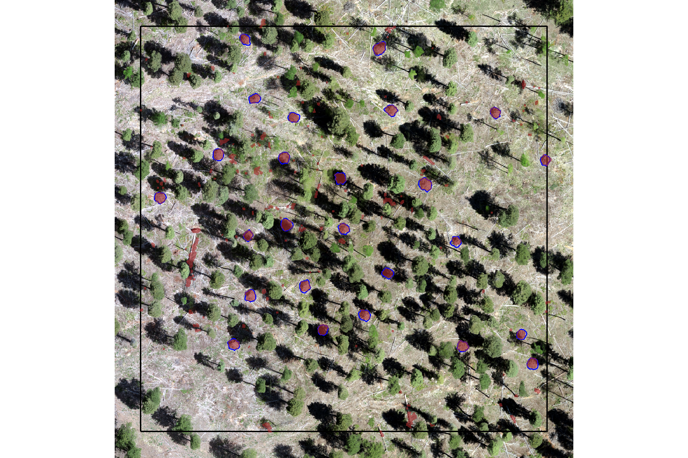
for superpixels covered by a pile, what is the distribution of percentage of superpixel that is covered by a pile?
## Min. 1st Qu. Median Mean 3rd Qu. Max.
## 0.001698 0.056225 0.197605 0.330665 0.548926 1.000000median_pile_pct_overlap <-
training_df %>%
dplyr::filter(pr_pile>0) %>%
dplyr::pull(pr_pile) %>%
quantile(probs = 0.44, na.rm = T)check it on the map
training_df %>%
ggplot2::ggplot() +
ggplot2::geom_sf(ggplot2::aes(fill = pr_pile)) +
ggplot2::geom_sf(data = slash_piles_polys, fill = NA, color = "blue", lwd = 0.3) +
ggplot2::scale_fill_viridis_c(option = "mako", direction = -1, na.value = "white") +
ggplot2::theme_void()
we can also see what it looks like if we include only pixels with >16% (~median value) of their area covered by a pile
training_df %>%
ggplot2::ggplot() +
ggplot2::geom_sf(ggplot2::aes(fill = pr_pile>=median_pile_pct_overlap)) +
ggplot2::geom_sf(data = slash_piles_polys, fill = NA, color = "blue", lwd = 0.3) +
ggplot2::scale_fill_viridis_d(option = "magma", begin = 0.2, end = 0.8, na.value = "white") +
ggplot2::labs(fill = paste0("pr_pile>",scales::percent(median_pile_pct_overlap,accuracy=1))) +
ggplot2::theme_void()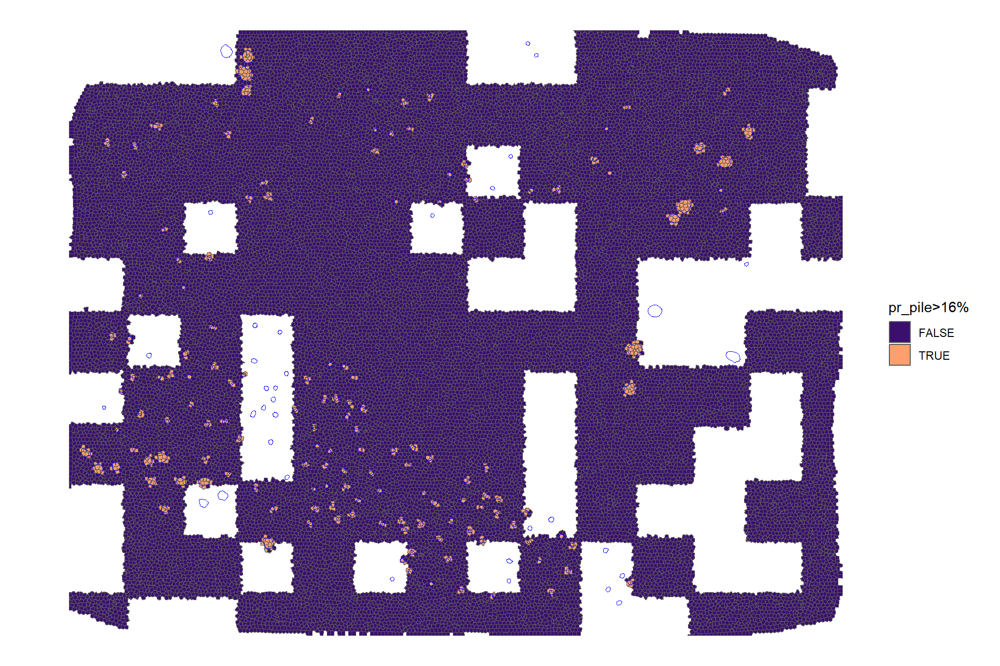
3.4.2.2 Classifier training for Superpixels
nice, now let’s train the a random forest classifier to predict superpixel values
# Tune on the full data if below threshold
tune_result_temp <- randomForest::tuneRF(
y = training_df$pr_pile
, x = training_df %>% sf::st_drop_geometry() %>% dplyr::select(-c(superpixel_id,pr_pile))
, ntreeTry = 500
, stepFactor = 1
, improve = 0.03
, plot = F
, trace = F
)
# Extract the optimal mtry value
optimal_mtry_temp <- tune_result_temp %>%
dplyr::as_tibble() %>%
dplyr::filter(OOBError==min(OOBError)) %>%
dplyr::filter(dplyr::row_number() == 1) %>%
dplyr::pull(mtry) %>%
as.numeric()
# pass to random forest model
mod_rf <- randomForest::randomForest(
y = training_df$pr_pile
, x = training_df %>% sf::st_drop_geometry() %>% dplyr::select(-c(superpixel_id,pr_pile))
, mtry = optimal_mtry_temp
, na.action = na.omit
, ntree = 500
)random forest variable importance plot
3.4.2.3 Predict values for validation superpixels
Predict values for validation superpixels
validation_df <- superpixels_slico_sf %>%
dplyr::filter(!superpixel_id %in% training_superpixel_id) %>%
dplyr::filter(!dplyr::if_any(dplyr::everything(), ~ is.na(.x))) # cant pass NA to classifier
# predict
validation_df <- validation_df %>%
dplyr::mutate(
pr_pile_pred = stats::predict(
mod_rf
, newdata = validation_df %>%
sf::st_drop_geometry() %>%
dplyr::select(
training_df %>% sf::st_drop_geometry() %>% dplyr::select(-c(superpixel_id,pr_pile)) %>% names()
)
)
)we’ll also apply predictions to the full extent, but won’t use this data for anything except to possibly identify piles that were missed in the field or image-annotation ground truth comparison
# predict
superpixels_slico_sf <-
superpixels_slico_sf %>%
dplyr::left_join(
superpixels_slico_sf %>%
dplyr::filter(!dplyr::if_any(dplyr::everything(), ~ is.na(.x))) %>%
sf::st_drop_geometry() %>%
dplyr::select(superpixel_id) %>%
dplyr::mutate(
pr_pile_pred = stats::predict(
mod_rf
, newdata = superpixels_slico_sf %>%
dplyr::filter(!dplyr::if_any(dplyr::everything(), ~ is.na(.x))) %>%
sf::st_drop_geometry() %>%
dplyr::select(
training_df %>% sf::st_drop_geometry() %>% dplyr::select(-c(superpixel_id,pr_pile)) %>% names()
)
)
)
)
# combine pile predictions into polygons
terra::mask(
superpixels_slico_sf %>%
dplyr::filter(pr_pile_pred>=median_pile_pct_overlap) %>%
sf::st_union(by_feature = F) %>%
sf::st_cast("POLYGON") %>%
sf::st_as_sf() %>%
dplyr::mutate(pred_pile_id = dplyr::row_number() %>% as.factor()) %>%
dplyr::select(pred_pile_id) %>%
sf::st_transform(terra::crs(ortho_rast)) %>%
terra::vect()
, ortho_rast %>%
terra::subset(c("red","green","blue")) %>%
cumsum() %>%
terra::subset(3) %>%
terra::subst(from = 0, to = 1, others = NA) %>%
terra::as.polygons()
, inverse = T
) %>%
sf::st_as_sf() %>%
# ggplot() + geom_sf()
sf::st_write("../data/predicted_piles_obia.gpkg", append = F)## Deleting layer `predicted_piles_obia' using driver `GPKG'
## Writing layer `predicted_piles_obia' to data source
## `../data/predicted_piles_obia.gpkg' using driver `GPKG'
## Writing 204 features with 1 fields and geometry type Polygon.plot predictions in validation area
validation_df %>%
ggplot2::ggplot() +
ggplot2::geom_sf(ggplot2::aes(fill = pr_pile_pred)) +
ggplot2::geom_sf(data = slash_piles_polys, fill = NA, color = "blue", lwd = 0.3) +
ggplot2::scale_fill_viridis_c(option = "mako", direction = -1, na.value = "white") +
ggplot2::theme_void()
we can also see what it looks like if we include only pixels with >16% (~median value) probability of being a pile
validation_df %>%
ggplot2::ggplot() +
ggplot2::geom_sf(ggplot2::aes(fill = pr_pile_pred>=median_pile_pct_overlap)) +
ggplot2::geom_sf(data = slash_piles_polys, fill = NA, color = "blue", lwd = 0.3) +
ggplot2::scale_fill_viridis_d(option = "magma", begin = 0.2, end = 0.8, na.value = "white") +
ggplot2::labs(fill = paste0("pr_pile>",scales::percent(median_pile_pct_overlap,accuracy=1))) +
ggplot2::theme_void()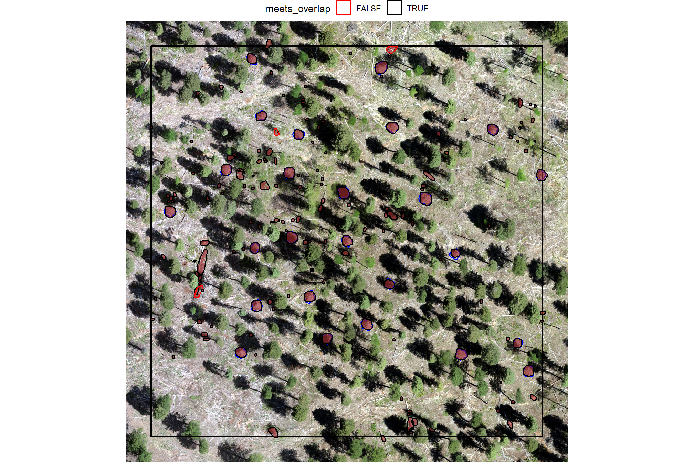
to filter potential false positives at this stage, we could apply additional statistical filters to the detected objects or their bounding boxes to remove detections that do not meet certain density or size criteria
3.4.2.4 Validation
let’s spatially combine superpixels with >16% (~median value) probability of being a pile
predicted_piles_sf <-
validation_df %>%
dplyr::filter(pr_pile_pred>=median_pile_pct_overlap) %>%
sf::st_union(by_feature = F) %>%
sf::st_cast("POLYGON") %>%
sf::st_as_sf() %>%
dplyr::mutate(pred_pile_id = dplyr::row_number() %>% as.factor()) %>%
dplyr::select(pred_pile_id)
# remove areas outside of mask
predicted_piles_sf <-
terra::mask(
predicted_piles_sf %>%
sf::st_transform(terra::crs(ortho_rast)) %>%
terra::vect()
, ortho_rast %>%
terra::subset(c("red","green","blue")) %>%
cumsum() %>%
terra::subset(3) %>%
terra::subst(from = 0, to = 1, others = NA) %>%
terra::as.polygons()
, inverse = T
) %>%
sf::st_as_sf()let’s check those on the map compared to the actual validation piles
ggplot2::ggplot() +
ggplot2::geom_sf(data = predicted_piles_sf, ggplot2::aes(fill = pred_pile_id), color = NA) +
ggplot2::geom_sf(data = slash_piles_polys %>% dplyr::filter(!pile_id %in% training_pile_id), fill = NA, color = "blue", lwd = 0.3) +
ggplot2::scale_fill_manual(
values = viridis::turbo(n = nrow(predicted_piles_sf), alpha = 0.8) %>% sample()
) +
ggplot2::theme_light() +
ggplot2::theme(legend.position = "none")
and let’s overlay all of this on the RGB imagery with the training piles in white, the validation piles in blue, and the predicted piles in orange
terra::plotRGB(ortho_rast, stretch = "lin", colNA = "transparent")
terra::plot(
slash_piles_polys %>%
dplyr::filter(pile_id %in% training_pile_id) %>%
sf::st_transform(terra::crs(ortho_rast)) %>% terra::vect()
, add = T, border = "white", col = NA, lwd = 1.2
)
terra::plot(
slash_piles_polys %>%
dplyr::filter(!pile_id %in% training_pile_id) %>%
sf::st_transform(terra::crs(ortho_rast)) %>% terra::vect()
, add = T, border = "blue", col = NA, lwd = 1.2
)
terra::plot(
predicted_piles_sf %>%
sf::st_transform(terra::crs(ortho_rast)) %>% terra::vect()
, add = T, border = "orangered", col = NA, lwd = 1.2
)
3.4.2.4.1 Matching process
Puliti et al. (2023, p. 14) provide guidance on performing “instance segmentation evaluation” to assess the ability of a method to correctly identify and delineate individual tree crown instances compared ground truth data. We’ll use this same methodology to test our slash pile identification approach.
The first step in performing any instance segmentation evaluation is to match the point cloud reference and predicted instance IDs. To do this, it is necessary to define whether a prediction is correct. Here we adopt a method Wielgosz et al. (2023) proposed for matching tree instance IDs from two point clouds with reference and predicted instance IDs, respectively. Given a reference and a predicted point cloud with two separate sets of instances, the tree instances are iteratively matched in descending order from the tallest to the shortest trees by using the following algorithm:
- Find the tallest tree in the reference data;
- Find the tree in the predicted instances that have the largest intersection over union (IoU) with the tree selected in the previous step;
- if the IoU is <0.5: the predicted tree is considered an error, and thus no reference instance ID is available;
- if the IoU is ≥0.5: the tree is considered a correct match, and assign reference instance ID label to the predicted tree;
- Add to collection (dictionary) of predicted tree instances with IDs matching the reference instance IDs.
Following the initial matching of reference and predicted instance IDs, the evaluation can be done on the tree level to evaluate detection, omission, and commission rates (which can be used to calculate precision, recall, and the F-score metric)
# check the data
check_gt_str <- function(
gt_inst
, gt_id = "pile_id"
, predictions
, pred_id = "pred_pile_id"
) {
if( !inherits(gt_inst,"sf")){stop("ground truth must be spatial `sf` data with a single record")}
if( !inherits(predictions,"sf") ){stop("predictions must be spatial `sf` data")}
if( !identical(sf::st_crs(gt_inst),sf::st_crs(predictions)) ){stop("`sf` data should have same crs projection")}
if( is.null(gt_id) || is.na(gt_id) ||
!inherits(gt_id, "character") ||
stringr::str_trim(gt_id) == ""
){
stop("ground truth data must contain `gt_id` column")
}
if( is.null(pred_id) || is.na(pred_id) ||
!inherits(pred_id, "character") ||
stringr::str_trim(pred_id) == ""
){
stop("ground truth data must contain `pred_id` column")
}
if( !(names(gt_inst) %>% stringr::str_equal(gt_id) %>% any()) ){stop("ground truth data must contain `gt_id` column")}
if( names(predictions) %>% stringr::str_equal(gt_id) %>% any() ){
predictions <- predictions %>%
dplyr::rename_with(
.cols = dplyr::all_of(gt_id)
, .fn = function(x){"prediction_id"}
)
pred_id <- "prediction_id"
}else if( !(names(predictions) %>% stringr::str_equal(pred_id) %>% any()) ){
stop("predictions data must contain `pred_id` column")
}
return(list(
predictions = predictions
, pred_id = pred_id
))
}
# match the instance
ground_truth_single_match <- function(
gt_inst
, gt_id = "pile_id"
, predictions
, pred_id = "pred_pile_id"
, min_iou_pct = 0.5
) {
# check it
check_ans <- check_gt_str(
gt_inst = gt_inst
, gt_id = gt_id
, predictions = predictions
, pred_id = pred_id
)
if(nrow(gt_inst)!=1 ){stop("ground truth must be spatial `sf` data with a single record")}
predictions <- check_ans$predictions
pred_id <- check_ans$pred_id
# intersection
i_temp <-
sf::st_intersection(predictions,gt_inst) %>%
dplyr::mutate(i_area = sf::st_area(.) %>% as.numeric())
if(nrow(i_temp)==0){return(NULL)}
# union
u_temp <-
i_temp %>%
sf::st_drop_geometry() %>%
dplyr::inner_join(predictions %>% sf::st_set_geometry("geom1"), by = pred_id) %>%
dplyr::inner_join(gt_inst %>% sf::st_set_geometry("geom2") %>% dplyr::select(dplyr::all_of(gt_id)), by = gt_id) %>%
dplyr::rowwise() %>%
dplyr::mutate(
u_area = sf::st_union(geom1, geom2) %>% sf::st_area() %>% as.numeric()
) %>%
dplyr::ungroup() %>%
dplyr::select(-c(geom1,geom2)) %>%
sf::st_drop_geometry() %>%
dplyr::mutate(
iou = dplyr::case_when(
is.na(u_area) | is.nan(u_area) ~ NA
, T ~ dplyr::coalesce(i_area,0)/u_area
)
) %>%
dplyr::filter(!is.na(iou) & iou>=min_iou_pct)
if(nrow(u_temp)==0){return(NULL)}
# return
return(
u_temp %>%
# pick the highest iou
dplyr::arrange(desc(iou)) %>%
dplyr::slice(1) %>%
# column clean
dplyr::select(dplyr::all_of(
c(
gt_id, "i_area", "u_area", "iou"
, base::setdiff(
names(predictions)
, c("geometry", "geom", gt_id, "i_area", "u_area", "iou")
)
)
))
)
}test for a single ground truth instance
ground_truth_single_match(
gt_inst = slash_piles_polys %>%
dplyr::filter(!pile_id %in% training_pile_id) %>%
dplyr::arrange(desc(diameter)) %>%
sf::st_transform(sf::st_crs(predicted_piles_sf)) %>%
dplyr::slice(2)
, gt_id = "pile_id"
, predictions = predicted_piles_sf
, pred_id = "pred_pile_id"
, min_iou_pct = 0.4
)## # A tibble: 1 × 5
## pile_id i_area u_area iou pred_pile_id
## <fct> <dbl> <dbl> <dbl> <fct>
## 1 50 32.9 44.1 0.746 2now we need to make a function that matches the instances iteratively allowing for only a single match from the predictions (i.e. one prediction can only go to one ground truth instance), and returns all instances labeled as true positive (correctly matched with a prediction), commission (predictions which do not match a ground truth instance; false positive), or omission (ground truth instances for which no predictions match; false negative)
ground_truth_prediction_match <- function(
# ground_truth should be sorted already
ground_truth
, gt_id = "pile_id"
# predictions just needs treeID
, predictions
, pred_id = "pred_pile_id"
, min_iou_pct = 0.5
) {
# check it
check_ans <- check_gt_str(
gt_inst = ground_truth
, gt_id = gt_id
, predictions = predictions
, pred_id = pred_id
)
predictions <- check_ans$predictions
pred_id <- check_ans$pred_id
# set up a blank data frame
return_df <-
dplyr::tibble(
i_area = as.numeric(NA)
, u_area = as.numeric(NA)
, iou = as.numeric(NA)
) %>%
dplyr::bind_cols(
ground_truth %>%
sf::st_drop_geometry() %>%
dplyr::select(dplyr::all_of(gt_id)) %>%
dplyr::slice(0)
) %>%
dplyr::bind_cols(
predictions %>%
sf::st_drop_geometry() %>%
dplyr::select(dplyr::all_of(pred_id)) %>%
dplyr::slice(0)
) %>%
dplyr::relocate(tidyselect::starts_with(gt_id))
# save names to select
nms_temp <- names(return_df)
# start with tallest tree and match to get true positives
for (i in 1:nrow(ground_truth)) {
match_temp <- ground_truth_single_match(
gt_inst = ground_truth %>% dplyr::slice(i)
, gt_id = gt_id
, predictions = predictions %>% dplyr::select(dplyr::all_of(pred_id)) %>% dplyr::anti_join(return_df,by=pred_id)
, pred_id = pred_id
, min_iou_pct = min_iou_pct
)
# add to return
if(!is.null(match_temp)){
return_df <- return_df %>%
dplyr::bind_rows(match_temp %>% dplyr::select(nms_temp))
}
match_temp <- NULL
}
# label tps
return_df <- return_df %>%
dplyr::mutate(match_grp = "true positive")
# add omissions
return_df <-
return_df %>%
dplyr::bind_rows(
ground_truth %>%
sf::st_drop_geometry() %>%
dplyr::anti_join(return_df,by=gt_id) %>%
dplyr::select(dplyr::all_of(gt_id)) %>%
dplyr::mutate(match_grp = "omission")
)
# add commissions
return_df <-
return_df %>%
dplyr::bind_rows(
predictions %>%
sf::st_drop_geometry() %>%
dplyr::anti_join(return_df,by=pred_id) %>%
dplyr::select(dplyr::all_of(pred_id)) %>%
dplyr::mutate(match_grp = "commission")
)
# make match_grp factor
return_df <- return_df %>%
dplyr::mutate(
match_grp = factor(
match_grp
, ordered = T
, levels = c(
"true positive"
, "commission"
, "omission"
)
) %>% forcats::fct_rev()
)
# return
if(nrow(return_df)==0){
warning("no records found for ground truth to predition matching")
return(NULL)
}else{
return(return_df)
}
}let’s see how we did given the full list of predictions and validation data
ground_truth_prediction_match_ans <- ground_truth_prediction_match(
ground_truth = slash_piles_polys %>%
dplyr::filter(!pile_id %in% training_pile_id) %>%
dplyr::arrange(desc(diameter)) %>%
sf::st_transform(sf::st_crs(predicted_piles_sf))
, gt_id = "pile_id"
, predictions = predicted_piles_sf
, pred_id = "pred_pile_id"
, min_iou_pct = 0.05
)how did our predictions do for this particular example?
# what did we get?
ground_truth_prediction_match_ans %>%
dplyr::count(match_grp) %>%
dplyr::mutate(pct = (n/sum(n)) %>% scales::percent(accuracy=0.1))## # A tibble: 3 × 3
## match_grp n pct
## <ord> <int> <chr>
## 1 omission 18 26.1%
## 2 commission 34 49.3%
## 3 true positive 17 24.6%let’s look at that spatially
pal_match_grp = c(
"omission"=viridis::cividis(3)[1]
, "commission"= "black" #viridis::cividis(3)[2]
, "true positive"=viridis::cividis(3)[3]
)
# plot it
ggplot2::ggplot() +
ggplot2::geom_sf(
data =
slash_piles_polys %>%
dplyr::filter(!pile_id %in% training_pile_id) %>%
sf::st_transform(sf::st_crs(predicted_piles_sf)) %>%
dplyr::left_join(
ground_truth_prediction_match_ans %>%
dplyr::select(pile_id,match_grp)
, by = "pile_id"
)
, mapping = ggplot2::aes(fill = match_grp)
, color = NA ,alpha=0.7
) +
ggplot2::geom_sf(
data =
predicted_piles_sf %>%
dplyr::left_join(
ground_truth_prediction_match_ans %>%
dplyr::select(pred_pile_id,match_grp)
, by = "pred_pile_id"
)
, mapping = ggplot2::aes(fill = match_grp, color = match_grp)
, alpha = 0
, lwd = 1.1
) +
ggplot2::scale_fill_manual(values = pal_match_grp, name = "") +
ggplot2::scale_color_manual(values = pal_match_grp, name = "") +
ggplot2::theme_light() +
ggplot2::guides(
fill = ggplot2::guide_legend(override.aes = list(color = c(NA,NA,pal_match_grp["commission"])))
, color = "none"
)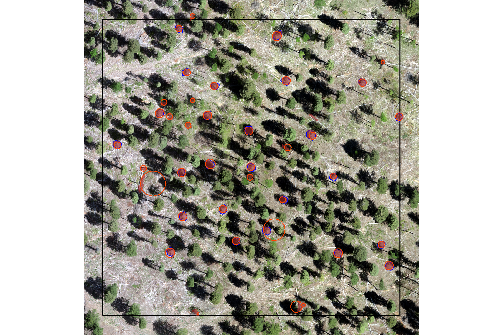
let’s quickly look at the IoU values on the true positives
## iou
## Min. :0.06114
## 1st Qu.:0.35915
## Median :0.45784
## Mean :0.44930
## 3rd Qu.:0.57578
## Max. :0.74625
## NA's :52let’s make a function to aggregate the instances to pass to the confusion_matrix_scores_fn() function we defined above
agg_ground_truth_match <- function(ground_truth_prediction_match_ans) {
if(nrow(ground_truth_prediction_match_ans)==0){return(NULL)}
if( !(names(ground_truth_prediction_match_ans) %>% stringr::str_equal("match_grp") %>% any()) ){stop("ground_truth_prediction_match_ans must contain `match_grp` column")}
# count by match group
agg <- ground_truth_prediction_match_ans %>%
dplyr::count(match_grp) %>%
dplyr::mutate(
match_grp = dplyr::case_match(
match_grp
, "true positive"~"tp"
, "commission"~"fp"
, "omission"~"fn"
)
)
# true positive, false positive, false negative rates
return_df <- dplyr::tibble(match_grp = c("tp","fp","fn")) %>%
dplyr::left_join(agg, by = "match_grp") %>%
dplyr::mutate(dplyr::across(.cols = c(n), .fn = ~dplyr::coalesce(.x,0))) %>%
tidyr::pivot_wider(
names_from = match_grp
, values_from = c(n)
, names_glue = "{match_grp}_{.value}"
)
# rates, precision, recall, f-score
return_df <- return_df %>% confusion_matrix_scores_fn()
# return
return(return_df)
}finally, let’s check our confusion matrix
confusion_matrix_temp <- agg_ground_truth_match(ground_truth_prediction_match_ans)
confusion_matrix_scores_temp <- confusion_matrix_scores_fn(confusion_matrix_temp)
# plot
confusion_matrix_temp %>%
dplyr::select(tidyselect::ends_with("_n")) %>%
tidyr::pivot_longer(dplyr::everything()) %>%
dplyr::mutate(
presence = ifelse(name %in% c("tp_n", "fn_n"),1,0)
, estimate = ifelse(name %in% c("tp_n", "fp_n"),1,0)
) %>%
dplyr::mutate(
is_false = as.factor(ifelse(presence!=estimate,1,0))
, presence_fact = factor(presence,levels = 0:1,labels = c("Observed Absent", "Observed Present"))
, estimate_fact = factor(estimate,levels = 0:1,labels = c("Predicted Absent", "Predicted Present"))
, pct = value/sum(value)
) %>%
ggplot(mapping = aes(y = estimate_fact, x = presence_fact)) +
geom_tile(aes(fill = is_false), color = "white",alpha=0.8) +
geom_text(aes(label = scales::comma(value,accuracy=1)), vjust = 1,size = 8) +
geom_text(aes(label = scales::percent(pct,accuracy=0.1)), vjust = 3.5, size=5) +
scale_fill_manual(values= c("turquoise","tomato2")) +
scale_x_discrete(position = "top") +
labs(
y = "Predicted"
, x = "Observed"
, subtitle = paste0(
"True positive rate (recall) = "
, confusion_matrix_scores_temp$recall %>%
scales::percent(accuracy = 0.1)
, "\nPrecision (PPV) = "
, confusion_matrix_scores_temp$precision %>%
scales::percent(accuracy = 0.1)
, "\nF1-score = "
, confusion_matrix_scores_temp$f_score %>%
scales::percent(accuracy = 0.1)
)
) +
theme_light() +
theme(
legend.position = "none"
, panel.grid = element_blank()
, plot.title = element_text(size = 9)
, plot.subtitle = element_text(size = 9)
)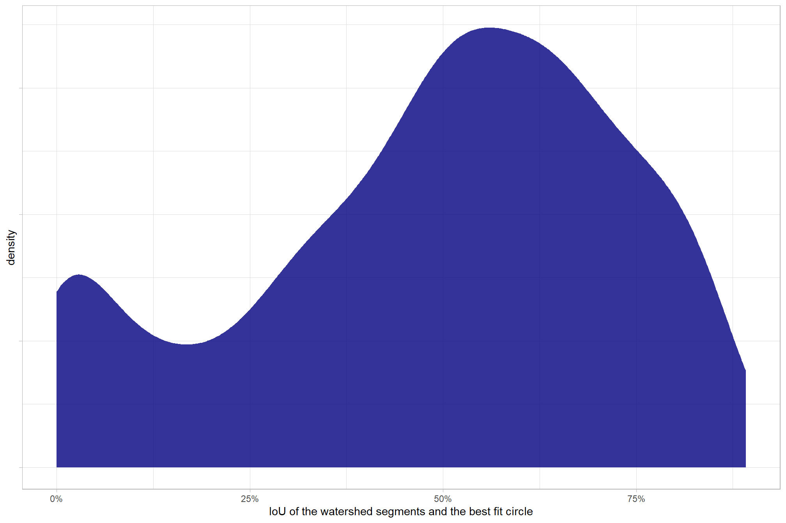
compared to our pixel-based approach above, we improved the recall rate meaning that we correctly identified actual piles more often. However, this improved detection rate came at the expense of lowered precision as we incorrectly predicted piles at locations were no piles were actually observed. Combined, the OBIA approach had lower overall accuracy but improved detection rate and did so in a manner that actual objects were predicted that more closely align with the actual form of slash piles on the ground.
3.4.3 SuperpixelImageSegmentation package SLICAP clustering
we’ll test out the SuperpixelImageSegmentation package which was developed specifically to implement the SLIC Superpixels and Affinity Propagation (AP) Clustering method of image segmentation (Zhou 2015). This method first uses the SLIC superpixel algorithm to form an over-segmentation of an image, constructs a similarity score based on the features of superpixels, and uses the AP algorithm to cluster superpixels. All of these steps are performed in a semi-automated manner as the user does not need to specify the number of clusters as required by other methods (e.g. Kmeans).
make a function to safely implement the methodology and automatically adjust the number of superpixels to attempt to return successful result
try_superpixels_fn <- function(
input_image
, method = "slico"
# number of superpixels to use
, superpixel = 200
, kmeans_method = ""
, AP_data = T
, use_median = T
, sim_wL = 3
, sim_wA = 10
, sim_wB = 10
, sim_color_radius = 10
, verbose = T
) {
# make sure sp is integer
new_sp <- dplyr::coalesce(superpixel, 200) %>% floor()
# make a list of backup sp
try_sp <- seq(from = max(floor(new_sp*0.95),10), to = max(floor(new_sp*1.05),10), by = 1) %>%
base::setdiff(new_sp) %>%
sample()
# safe it
safe_superpixels <- purrr::safely(OpenImageR::superpixels)
# while loop to handle superpixel errors
xx <- 1
# initiate and perform segmentation of images based on superpixels, affinity propagation and kmeans clustering
init <- SuperpixelImageSegmentation::Image_Segmentation$new()
safe_spixel_segmentation <- purrr::safely(init$spixel_segmentation)
while(xx!=0 && xx<length(try_sp)) {
# superpixels
superpixels_slicap_ans <- safe_spixel_segmentation(
input_image = input_image
, superpixel = new_sp
, method = method
, kmeans_method = kmeans_method
, AP_data = AP_data
, use_median = use_median
, sim_wL = sim_wL
, sim_wA = sim_wA
, sim_wB = sim_wB
, sim_color_radius = sim_color_radius
, verbose = verbose
)
# check
if(!is.null(superpixels_slicap_ans$error) &&
stringr::str_detect(as.character(superpixels_slicap_ans$error), "median")
){
stop(superpixels_slicap_ans$error)
}else if(is.null(superpixels_slicap_ans$error)){
# just get the result
superpixels_slicap_ans <- superpixels_slicap_ans$result
xx <- 0
}else{
if(xx==1){message("attempting to adjust `superpixel` size.......")}
# just get the result (in case we exit the while)
superpixels_slicap_ans <- superpixels_slicap_ans$result
new_sp <- try_sp[xx]
xx <- xx+1
}
}
if(is.null(superpixels_slicap_ans)){stop("`superpixel` size not successfull, try a different value")}
return(superpixels_slicap_ans)
}run it
superpixels_slicap_ans <- try_superpixels_fn(
input_image = OpenImageR::readImage(fpath_seg)
# a numeric value specifying the number of superpixels
, superpixel = 600
# Either "slic" or "slico"
, method = "slico"
# a character string specifying the kmeans method. If not empty ("") then it can be either "kmeans" or "mini_batch_kmeans"
, kmeans_method = ""
# If TRUE then the affinity propagation image data will be computed and returned
, AP_data = TRUE
# If TRUE then the median will be used rather than the mean value for the inner computations (see the details section for more information)
, use_median = TRUE
# a numeric value specifying the weight for the "L" channel of the image (the weights of the three channels based on the "CIELAB color space")
, sim_wL = 3
# a numeric value specifying the weight for the "A" channel of the image (the weights of the three channels based on the "CIELAB color space")
, sim_wA = 10
# a numeric value specifying the weight for the "B" channel of the image (the weights of the three channels based on the "CIELAB color space")
, sim_wB = 10
# numeric value specifying the colorradius:
## adjusts the number of clusters, and if its value is low, the number of targets would increase, which leads to more detailed segmentation results
, sim_color_radius = 10
, verbose = TRUE
)## Sequential computation starts ...## Sequential computation starts ...
## Sequential computation starts ...
## The super-pixel slico method as pre-processing step was used / completed!
## The similarity matrix based on super-pixels was computed!
##
## Number of exemplars identified: 7 (for 612 data points)
## Net similarity: -130785
## Similarities of data points to exemplars: -70926
## Preferences of selected exemplars: -59859
## Number of iterations: 142
##
## Elapsed time: 0.613274 sec
## It took 142 iterations for affinity propagation to complete!
## 7 clusters were chosen based on super-pixels and affinity propagation!
## Image data based on Affinity Propagation clustering ('AP_image_data') will be returned!
## Elapsed time: 0 hours and 1 minutes and 25 seconds.what did we get back?
## List of 5
## $ KMeans_image_data: num[0 , 0 , 0 ]
## $ KMeans_clusters : num[1, 0 ]
## $ masks : list()
## ..- attr(*, "dim")= int [1:2] 0 0
## $ centr : num[0 , 0 ]
## $ AP_image_data : num [1:3567, 1:4552, 1:3] 0 0 0 0 0 0 0 0 0 0 ...let’s see the output based on Superpixels + AP

ok, let’s increase the number of superpixel and decrease the sim_color_radius to get finer detail (but significantly increase processing time)
this takes so long, we aren’t going to show the result but we’ll leave the code for reference
## number of superpixels to use
## set this to extent/minimum expected pile area?
sp_temp <- floor(
# raster area
( terra::cellSize(ortho_rast[[1]])[1]*terra::ncell(ortho_rast[[1]]) ) /
# expected pile area
(
slash_piles_polys %>% dplyr::mutate(area = sf::st_area(.) %>% as.numeric()) %>%
dplyr::pull(area) %>%
quantile(probs = 0.77)
)
) %>%
max(200) # 200 = function default
# try it
superpixels_slicap_ans <- try_superpixels_fn(
input_image = OpenImageR::readImage(fpath_seg)
# a numeric value specifying the number of superpixels
, superpixel = sp_temp # 3333
# Either "slic" or "slico"
, method = "slico"
# a character string specifying the kmeans method. If not empty ("") then it can be either "kmeans" or "mini_batch_kmeans"
, kmeans_method = ""
# If TRUE then the affinity propagation image data will be computed and returned
, AP_data = TRUE
# If TRUE then the median will be used rather than the mean value for the inner computations (see the details section for more information)
, use_median = TRUE
# a numeric value specifying the weight for the "L" channel of the image (the weights of the three channels based on the "CIELAB color space")
, sim_wL = 3
# a numeric value specifying the weight for the "A" channel of the image (the weights of the three channels based on the "CIELAB color space")
, sim_wA = 10
# a numeric value specifying the weight for the "B" channel of the image (the weights of the three channels based on the "CIELAB color space")
, sim_wB = 10
# numeric value specifying the colorradius:
## adjusts the number of clusters, and if its value is low, the number of targets would increase, which leads to more detailed segmentation results
, sim_color_radius = 3
, verbose = TRUE
)let’s see the clustering output based on Superpixels + AP and we’ll add the pile outlines in blue
# use the ortho template so we get the projection and then fill with values
rast_temp <- ortho_rast %>% terra::subset(1)
rast_temp[] <- superpixels_slicap_ans$AP_image_data[,,1] %>% terra::rast()
# the unique values in the layer represent the unique clusters
rast_temp <- terra::subst(
rast_temp
, from = terra::values(rast_temp) %>% unique() %>% c()
, to = 1:(terra::values(rast_temp) %>% unique() %>% length())
) %>%
terra::as.factor()
# rast_temp %>% terra::crs()
# rast_temp %>% terra::plot()
# reset the colors
terra::coltab(rast_temp) <- data.frame(
value = terra::minmax(rast_temp)[1]:terra::minmax(rast_temp)[2]
, col = viridis::turbo(terra::unique(rast_temp) %>% nrow(), alpha = 0.9)
)
# plot
terra::plot(rast_temp, colNA = "black", axes=F)
terra::plot(
slash_piles_polys %>%
sf::st_transform(terra::crs(ortho_rast)) %>% terra::vect()
, add = T, border = "blue", col = NA, lwd = 1.2, axes=F
)it looks like the automatic clustering did not consistently classify the pile locations. let’s check the distribution of the clusters within the pile locations
tab_temp <- rast_temp %>%
terra::extract(
slash_piles_polys %>%
sf::st_transform(terra::crs(ortho_rast)) %>% terra::vect()
, ID = F
) %>%
dplyr::rename(cluster = 1) %>%
dplyr::count(cluster) %>%
dplyr::mutate(pct = n/sum(n)) %>%
dplyr::arrange(desc(n))
# table
tab_temp %>%
dplyr::select(-n) %>%
dplyr::mutate(pct = scales::percent(pct,accuracy=0.1)) %>%
kableExtra::kbl(
col.names = c("cluster","pct of clusters<br>that overlap with a pile")
, escape = F
) %>%
kableExtra::kable_styling()we can see this if we look at only the clusters that overlap with at least 10% of the piles
###
terra::subst(
rast_temp
, from = tab_temp %>% dplyr::filter(pct>=0.1) %>% dplyr::pull(cluster) %>% as.numeric()
, to = tab_temp %>% dplyr::filter(pct>=0.1) %>% dplyr::pull(cluster) %>% as.numeric()
, others = NA
) %>%
terra::plot(axes = F)
terra::plot(
slash_piles_polys %>%
sf::st_transform(terra::crs(ortho_rast)) %>% terra::vect()
, add = T, border = "blue", col = NA, lwd = 1.2, axes=F
)this testing indicated that clustering based on Superpixels + AP will likely not work for our problem to detect slash piles in imagery because the output is not granular enough
3.4.3.1 Kmeans to automatically determine clusters
one might take advantage of the automatic way the AP algorithm determines the number of clusters in order to perform vector quantization using kmeans (this will give qualitative better results at the cost of increasing computation time). the advantage of using Superpixels + AP + Kmeans (or Mini-Batch-Kmeans, which can decrease the computation time at the cost of a reduced image quality) lies in the fact that the user does not have to specify the number of clusters beforehand
to do this, we update the kmeans_* parameters
this took 40 minutes with kmeans_method = “kmeans”
# initiate and perform segmentation of images based on superpixels, affinity propagation and kmeans clustering
# ?SuperpixelImageSegmentation::Image_Segmentation
init <- SuperpixelImageSegmentation::Image_Segmentation$new()
superpixels_slicap_ans <- init$spixel_segmentation(
input_image = im_temp
# a numeric value specifying the number of superpixels
, superpixel = sp_temp # 3333
# Either "slic" or "slico"
, method = "slico"
# a character string specifying the kmeans method. If not empty ("") then it can be either "kmeans" or "mini_batch_kmeans"
, kmeans_method = "mini_batch_kmeans"
# the method of initialization. One of, optimal_init, quantile_init, kmeans++ and random
, kmeans_initializer = "kmeans++"
# number of times the algorithm will be run with different centroid seeds
, kmeans_num_init = 3
# the maximum number of clustering iterations
, kmeans_max_iters = 100
# If TRUE then the affinity propagation image data will be computed and returned
, AP_data = TRUE
# If TRUE then the median will be used rather than the mean value for the inner computations (see the details section for more information)
, use_median = TRUE
# a numeric value specifying the weight for the "L" channel of the image (the weights of the three channels based on the "CIELAB color space")
, sim_wL = 3
# a numeric value specifying the weight for the "A" channel of the image (the weights of the three channels based on the "CIELAB color space")
, sim_wA = 10
# a numeric value specifying the weight for the "B" channel of the image (the weights of the three channels based on the "CIELAB color space")
, sim_wB = 10
# numeric value specifying the colorradius:
## adjusts the number of clusters, and if its value is low, the number of targets would increase, which leads to more detailed segmentation results
, sim_color_radius = 2
, verbose = TRUE
)what did we get back?
let’s see the clustering output based on Superpixels + AP + Kmeans and we’ll add the pile outlines in blue
# # Superpixels + AP
# OpenImageR::imageShow(superpixels_slicap_ans$AP_image_data)
# # Superpixels + AP + Kmeans
# OpenImageR::imageShow(superpixels_slicap_ans$KMeans_image_data)
# use the ortho template so we get the projection and then fill with values
rast_temp <- ortho_rast %>% terra::subset(1)
rast_temp[] <- superpixels_slicap_ans$KMeans_image_data[,,1] %>% terra::rast()
# the unique values in the layer represent the unique clusters
rast_temp <- terra::subst(
rast_temp
, from = terra::values(rast_temp) %>% unique() %>% c()
, to = 1:(terra::values(rast_temp) %>% unique() %>% length())
) %>%
terra::as.factor()
# rast_temp %>% terra::crs()
# rast_temp %>% terra::plot()
# reset the colors
terra::coltab(rast_temp) <- data.frame(
value = terra::minmax(rast_temp)[1]:terra::minmax(rast_temp)[2]
, col = viridis::turbo(terra::unique(rast_temp) %>% nrow(), alpha = 0.9)
)
# plot
terra::plot(rast_temp, colNA = "black", axes=F)
terra::plot(
slash_piles_polys %>%
sf::st_transform(terra::crs(ortho_rast)) %>% terra::vect()
, add = T, border = "blue", col = NA, lwd = 1.2, axes=F
)let’s check the distribution of the clusters within the pile locations
tab_temp <- rast_temp %>%
terra::extract(
slash_piles_polys %>%
sf::st_transform(terra::crs(ortho_rast)) %>% terra::vect()
, ID = F
) %>%
dplyr::rename(cluster = 1) %>%
dplyr::count(cluster) %>%
dplyr::mutate(pct = n/sum(n)) %>%
dplyr::arrange(desc(n))
# table
tab_temp %>%
dplyr::select(-n) %>%
dplyr::mutate(pct = scales::percent(pct,accuracy=0.1)) %>%
kableExtra::kbl(
col.names = c("cluster","pct of clusters<br>that overlap with a pile")
, escape = F
) %>%
kableExtra::kable_styling()did anything change with the Superpixels + AP output?
# use the ortho template so we get the projection and then fill with values
rast_temp <- ortho_rast %>% terra::subset(1)
rast_temp[] <- superpixels_slicap_ans$AP_image_data[,,1] %>% terra::rast()
# the unique values in the layer represent the unique clusters
rast_temp <- terra::subst(
rast_temp
, from = terra::values(rast_temp) %>% unique() %>% c()
, to = 1:(terra::values(rast_temp) %>% unique() %>% length())
) %>%
terra::as.factor()
# rast_temp %>% terra::crs()
# rast_temp %>% terra::plot()
# reset the colors
terra::coltab(rast_temp) <- data.frame(
value = terra::minmax(rast_temp)[1]:terra::minmax(rast_temp)[2]
, col = viridis::turbo(terra::unique(rast_temp) %>% nrow(), alpha = 0.9)
)
# plot
terra::plot(rast_temp, colNA = "black", axes=F)
terra::plot(
slash_piles_polys %>%
sf::st_transform(terra::crs(ortho_rast)) %>% terra::vect()
, add = T, border = "blue", col = NA, lwd = 1.2, axes=F
)no.